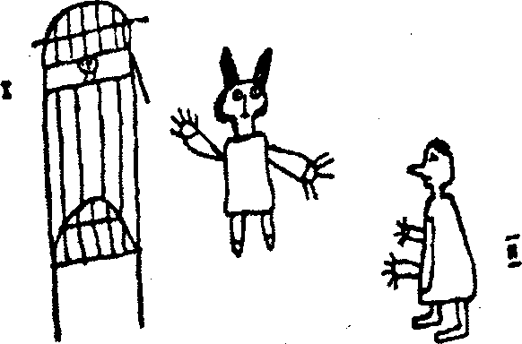

James Joyce Sanatçının Bir Genç Adam Olarak Portresinde trajedinin malzemesini, “insanın acılarında katlanılmaz ve sürekli olan her şey”59 diye belirtirken, kültürler arası mitoloji alanının bir temel ilkesini çok iyi dile getiriyor; çünkü dünya mitolojilerindeki etkileri benzer olan “katlanılmaz ve sürekli” olandan türüyor bu ilke. Bu etkiler içinde acının kendisi -trajedinin hammaddesi- kuşkusuz en genel olanı; çünkü, en azından bir hazırlayıcı anlamında her şeyin başlangıcı ve sonucudur.
Trajedi -Yunan trajedisi- mitolojinin şiirsel bir bükümü, Aristoteles’in ritin etkisiyle ruhun psikolojik anlamda temizlenmesinin tam karşılığı diye söylediği, acı ve korku yoluyla oluşan duygu katarsisidir de (Kâθapσis). Rit gibi, trajedi de zihnin yoğunlaşmasında değişiklik yaratarak acıyı esrimeye dönüştürür. Trajik sanat, din dilinde ‘ruhsal temizlenme’ veya ‘ruhun kendinden soyunması’ olarak adlandırılan disipline karşılık gelir. Acılarındaki katlanılmazlık ve süreklilik düşüncesiyle ölümlü yönüne bağlanmayı bırakan insan, Platon’un deyimiyle, “doğumunda düzeni bozulmuş olan kafasındaki halkaları, dünyanın uyumunu öğrenerek yeniden düzeltmeye koyulur”60 - sonunda, insan Platon’un “zihnin benzerliklerini gördüğü” dediği “acı çekenle” trajik acıyı, “gizli nedenle” trajik korkuyu aynı anda birleştirir. Yine de bir gün, bir sevinç çığlığıyla, insanlığı ve zihni arkada bırakacak ruh birden maskenin arkasında olanı tanıyabilir. Finis tragoediae: incipit comoedia. Trajedi kipi sona erer ve mitos başlar.
Nicholas Cusanus “Tanrım, yüzün ne kadar muhteşem” diye yazmıştı:
“Yüzün, genç bir adam hayal görmek istediğinde, genç gördüğü, yetişkin bir erkeğin yetişkin erkek yüzü olarak ve yaşlı birinin yaşlı yüzü olarak gördüğü yüzün! Kim bu tek biçimi, bütün yüzlerin en gerçek ve uygun biçimini hayal edebilir -hepsi gibiyken her biri gibidir- hiçbiri değilmiş gibi mükemmel biçimde her biri olur. Olabilecek bütün yüz formlarının ve biçimlerinin ötesine geçmesi gerekir. Ve bütün yüzlerin ötesine geçince insan bir yüzü nasıl hayal edebilir? Bütün yüzlere ve biçimlere benzeyen bir yüzü oluşturabilecek bütün nitelikleri ve bütün yüzlerin renklerini, süslerini, güzelliğini nasıl hayal edebilir? Senin yüzüne ulaşmak için belirleyip bir kavram oluşturdukça senin yüzünden uzaklaşır. Çünkü bütün yüz kavramları, Tanrım, senin yüzün yanında yetersiz kalır ve bütün kavranılabilecek güzellikler senin yüzünün güzelliği yanında azdır. Her yüzün güzelliği vardır ama hiçbiri güzelliğin kendisi değildir; ama senin yüzün, Tanrım, güzeldir ve bu varlığın kendisidir. Bu nedenle, O, Mutlak Güzelliğin kendisidir, her güzel biçime varlık veren biçim O’dur. O müthiş güzel yüz, güzelliğini her şeyin borçlu olduğu güzellik, sana hayranlık yetersiz kalır! Her yüzde bu yüzler Yüzü görülür; örtünmüş ve bulmaca gibi ne kadar açık olsa insan bütün yüzlerin ötesinde bir yüz kavramı ve bilgisi olmayan gizli ve mistik sessizliğe girmedikçe görülmez. Senin Yüzünü arayanın girdiği bu bulanık, bulutlu, karanlık ya da cehalet bütün bilgi ve kavramların ötesine vardığı, Senin Yüzünün örtülü olmak dışında bulunamadığı düşük bir düzeydir ama bu karanlığın kendisi senin yüzünün bütün örtülerin ötesinde orada olduğunu belli eder.”61
Korkuyla değil esrimeyle bilinen gizli neden de işte budur. Ve onun tek gerçek sahibi arınmış ruhtur, normal insan deneyiminin, düşünme ve konuşmanın sınırlarını aşar. Hint Kena Upanişad’ında “Orada göz yoktur, konuşma yoktur, akıl yoktur” diye okuyoruz.62 Gene de bu etki dünyada birçokları tarafından yaşanmıştır. Ve (Cusanus’un bu esinli ifadesi kadar mükemmel olanı nadirse de) birçok mitolojide, birçok mistiğin ilahisinde birçok ülkede defalarca ortaya konmuştur. Kuşkusuz yaşanabilen bir deneyimdir ve belki de hatta insanın ‘katlanılmaz ve sürekli’ olan acıları ve sevinçleri arasında yüce bir yere konulmalıdır. Üstelik, onu açığa vuran imgeler bizim dinsel simgeleştirmelerimizin yerel biçimlerine ne kadar yabancı olursa olsun bir disiplin olarak bilimimizce sınıflandırılmalıdır.
Beşinci Danimarka Thule63 Keşif Gezisinde (1921-1924), Kuzey Amerika kutup bölgesinde Grönland’dan Galler Prensi Adalarına ve Alaska’ya uzanıp Kutbu aşan yetenekli bilim adamı ve kâşif Knud Rasmussen, bu olağanüstü gezi sırasında kimi Eskimo şamanlarına rastladı ve onların dostluğunu kazandı. Birincisi Hudson Körfezi’ndeki Aua adlı yumuşak kalpli, sıcak, konuksever yaşlı bir adamdı. İkincisi sert Baker Gölü bölgesinde Karibu64 Eskimoları (dünyanın olabilecek en ilkel insanları) arasındaki Igjugarjuk adlı, insafsız, çok zeki, bağımsız yaşayan vahşi biriydi. Igjugarjuk gençken, evlenmek istediği kızın ailesi onu reddetmiş, kardeşiyle gidip genç kızın kulübesinin karşısında yatıp beklemiş ve kızın bütün ailesini, annesini, babasını, kız ve erkek kardeşlerini, hepsi 7-8 kişi, öldürmüş; yalnızca evlenmek istediği kız kalmış. Diğeri de, Nome’da, Najagneq adlı yaşlı bir serseriydi. Kendi toplumundan 7, 8 kişiyi öldürmüş olduğu için hapisten çıkalı bir yıl olmuşmuş. Najagneq ücra bir köyünde, evinin çevresini kale gibi berkitmiş ve kabilesinin hepsine karşı -beyazlara da karşı da savaşmış- bir savaş hilesiyle bir gemi kaptanı tarafından kandırılıp Nome’a getirilene kadar. Köyünden cinayetleri için on tanık getirilebilene kadar orada hapiste kalmış, fakat bu tanıklar onunla yüzleşince, onun işinin bitirilmesi için çok istekli olacak yerde, suçlamalarından vazgeçmişler. Küçücük gözleriyle çevresine delice bakışlar saçıyordu; çenesi de onu öldürmek isteyen bir adamın, yüzünde açtığı yaradan ötürü artık gevşemiş bir sargıyla sarılmıştı. Tanık bölümünde oturan adamlar onu suçlarken, yaşlı adamın görünüşünden ötürü kendi kendilerine utanıp gözlerini utançla yere indirdiler.
Bu paçavralar içindeki şamanların karakterleri üstünde biraz durmaya değer. Yoksa yüksek dinsel yaşamın ancak aziz gibi insanlara bağışlandığını düşünebiliriz.
Dr. H. Ostermann, Beşinci Thule Keşif Gezisi raporuna şunları yazmıştır:
“Najagneq’in imgelem gücü büyük Nome kasabasında uyarılmıştı. Toprak kulübe, kızak ve kayak dışında bir şey bilmezken büyük evler, buharlı gemiler ve otomobillerden hiç de etkilenmemişti. Fakat kocaman bir arabayı çeken beyaz bir ata çarpılmıştı. Şaşkın köylülerine Nome’daki beyaz adamlar tarafından o kış on kez öldürüldüğünü söyledi fakat on beyaz at onun yardımcı ruhları olmuştu ve birer birer onları kurban ederek kendi yaşamını kurtarmıştı.
Bu ‘on at gücünde’ adamın konuşma yeteneği vardı ve konuştuğu insanları hemen etkisi altına alıyordu. Dr. Rasmussen üzerinde tuhaf biçimde, kibar bir yumuşaklık yaratmıştı ve onunla birlikte yalnızken köylülerini aldattığını itiraf etmekten çekinmiyordu. Martavalcı değildi fakat herkese karşı kendini savunmaya alışmış yalnız bir adamdı ve küçük hileler geliştirmişti. Ama ne zaman eski hayalleri ve atalarının inançları söz konusu edilse kısa ve özlü yanıtları ağırbaşlı bir ciddiyet taşıyordu. Dr. Rasmussen ona sözünü ettiği güçlere inanıp inanmadığını sorduğunda, “Evet, bizim Sila dediğimiz, söze sığmaz bir güç var” dedi, “Güçlü bir ruh; evreni, iklimi, dünya üstündeki yaşamı yaratan o; o kadar güçlü ki sözleri insana sıradan sözler olarak ulaşmaz, fırtınalar, tipiler, sağanaklar, kasırgalar halinde gelir. İnsanın korktuğu bütün güçler yoluyla. Gün ışığı, sakin denizler ve küçük, masum, bir şey bilmeyen çocuklarla ulaşır. İşler iyi gittiğinde Sila’nın insanlara söyleyecek sözü yoktur. Sonsuz yokluğuna gömülür ve insan yaşamında kötülük yapmayıp günlük yiyeceğinin peşinde koştukça orada kalır. Kimse Sila’yı görmemiştir. Kaldığı yer öyle gizemlidir ki aynı anda hem bizimledir hem de sonsuz kadar uzaktadır.”
Dr. Rasmussen [Dr. Ostermann, Rasmussen’in ölümünden sonra bulunan notlarından alıntı yapmaktadır] şunları ekler: “Najagneq’in sözleri seyahatimizde her yerde rastladığımız yaşlı şamanların saygın bilgeliğini çağrıştırıyordu. Sert Kral William’ın ülkesinde ya da Aua’nın Hudson Körfezindeki neşeli kulübede rastladıklarımızın aynıydı. “Tek gerçek bilgelik insanoğlundan uzakta yaşar, büyük yalnızlıkta ve ona ancak acıyla ulaşılır. Ancak sıkıntı ve acı insan zihnine, bütün herkese kapalı olanların kapısını açabilir” diyen ilkel Eskimo Igjugarjuk’da da aynısı vardı.65
Daha sonraki bir bölümde Igjugarjuk ve acı yoluyla gerçek bilgeliği öğrenmenin öyküsüne döneceğiz. Şu an üstünde duracağımız büyük Cusanus’tan ulu Igjugarjuk’a kadar, ne kadar kültürel kalıtım varsa o kadar insan karakteri ve deneyimi bulunmasıdır. Yine de, yanılmıyorsam, birbirlerinden habersiz sözünü ettikleri şey en sonunda aynı şeydir. Bu da, “büyük yalnızlık içinde”, acı yoluyla saklı bilgeliği öğrenebileceğimizden başka bir şey değildir. “Bütün yüz formlarının ve biçimlerinin ötesinde bir biçim” ya da Najagneq’in dediği gibi “söze sığmaz” olan da aynı şeydir.
İnsanın ‘katlanılmaz ve sürekli’ olan acıları, bu durumda, onu yaşayanların, yaşamlarının doruğu dediği ama yine de dile gelmez görünen deneyime götürür -ya da götürebilir. Bu deneyim, en azından ona yaklaşmak, bütün dinlerin en son hedefi, bütün mitos ve ritlerin en son başvuru kaynağıdır. Ayrıca, dünyanın mitolojik geleneklerini geliştiren ve yaşatanlar, şamanlar, bilgeler, peygamberler ve kâhinlerdir ve sözle anlatılamaz gizemi gerçekten yaşamışlardır ve onu yüceltenler de onlardır. Konumuzun ironilerinden biri, ilkel kabileler arasında araştırma yapıp malzeme toplayan bilim adamlarının zihinlerinin çoğunlukla bu deneyime karşı yalıtılmış olması veya ‘mistik’ terimini hile olarak gören kimseler olmaları veya bütün yaklaşımları kendi ruhsal benzetme geleneklerine bağlı kalan misyonerler olmalarıdır. Yine de zaman zaman Rasmussen’in erdemine sahip bir bilim adamı çıkar ve gerçek, onda ifadesini bulur.
İlk dikkat çekmesi gereken nokta ilkel büyücünün insanla bu gizem arasındaki ilişkiyi gelişmiş dinlerin yıllıklarında bulunan bir kavrayışla anlatabilmesi değil, aynı zamanda kendi mitolojisinin kendi saf hemşerilerini etkileyen kötü niyetli parodilerini de üretebilmesidir. Geçerli mitolojik motiflerin (ölüm ve diriliş gibi) aldatma amacıyla bu yolda kullanılması, zorunlu olarak olağan bağlamında ‘halkın afyonu’ olduklarını kanıtlamaz. Ama hiç kuşkusuz yalnızca buna da dönüşebilir. Dinin nihai başvuru kaynağı söze gelmez olduğuna göre, mitolojiye en içten biçimde bağlanarak yaşayanlar en fazla aklananlardır -bu aldanışın kendisi de yüz olmayan yüzün tanınmasından önce insan zihninin yaşaması gereken acı ve karanlığın bir parçasıdır-.
Sanskritçede upadhi sözcüğü ‘hile, aldatma, kılık değiştirme’ aynı zamanda da ‘sınırlama, huy ve sıfat’ anlamlarına gelir. Nihai gerçek, sıfatları olmadığından zihin tarafından kavranılamaz. Igjugarjuk’un dediği gibi, “İnsanoğlundan uzakta, büyük yalnızlıkta” yaşar. Dolayısıyla zihni Mutlak Güzelliğin güzelliğini yaşamaya hazırlamak için düzenlenen rit ve derin düşünceler, ona atfedilen ‘sıfat’ları (upadhi) içerir. Örneğin, Cusanus’un düşüncesinde, yüzü olma özelliği ve güzellik atfedilmiştir.
Gerhart Hauptmann, şiirin Sözün arkasındaki sözlerin sesini duyurma sanatı (Dichten heisst, hinter Worten das Urwort erklingen lassen) olduğunu söylemiştir.66 Aynı anlamda mitoloji de, biçimi olmayan biçimdir. Biçimin bilinebilmesi için biçimler oluşturulmaktadır. Düşük nitelikli bir nesne üstün temsili veya bulunduğu yer olarak sunulur. Düşük nesneye gösterilen sevgi ya da bağlılık gerçekte üstün olan için duyulanların potansiyel olarak işlevidir; eğer zihin istenilen amaca ulaşacaksa yine de onun kurban edilmesi gerekir (işte acı!).
Karşılaştırmalı mitoloji bilimi böylelikle upadhiler’in karşılaştırılmasının bilimidir. Varlığa atfedilen görüntüler; insan aklı bunlar yoluyla egemenliği altındaki çeşitli zaman ve yerlerde trajik terörün gizli amacıyla ve trajik acının acı çeken insanıyla (kendi nefsinden soyunarak) birleşir. Bu upadhilerin iki türü vardır: bütün insan deneyiminin birincil koşullarından kaçınılmaz olarak çıkartılanlar (la condition humaine) ve insan uygarlığının belirli bölge ve zamanlarına ait olanlar (die Völker-gadanken). İlk türü bu bölümde, ötekileri kitabın kalan bölümlerinde ele alacağız.
Ama, hiç kuşkusuz, hepsi acıya, acının trajik upadhisine (ya da aldatmaya) ait değildir. Çünkü mitolojinin yüce konusu bir serüvenin ıstırabı değil, gizli olanın keşfidir; ölüm değil diriliştir: Halleluya!
Evrenin ulu tanrıçası Kraliçe İsis, sofu Lucius Apuleius’a göründüğünde, alegorik olarak büyük yargılamayı anlattığı romanı Altın Eşek’in sonunda şöyle der:
“Ben her şeyin doğal annesi, bütün öğelerin sahibesi ve yöneticisi, bütün dünyalarda insan neslini başlatan, kutsal güçlerin reisi, cehennemdeki her şeyin kraliçesi, cennette yaşayanların özüyüm; bütün tanrıların ve tanrıçaların göründüğü tek biçim benim. Gökyüzünün gezegenleri, denizlerin bütün rüzgârları ve cehennemin acıklı sessizliği benim irademle idare edilir. Tüm dünyada değişik biçimler, farklı gelenekler ve birçok adlar altında anılan benim adımdır, tapınılan benim kutsal varlığımdır.
İnsanların ilki olan Frigler bana Pessinus tanrılarının Anası, kendi topraklarından çıkan Atinalılar Cecropian Minerva, denizle çevrilmiş olan Kıbrıslılar Paphian Venüsü, yay taşıyan Giritliler Dictynialı Diana, üç dil konuşan Sicilyalılar korkunç Proserpine, Elevsisliler eski tanrıçaları Ceres, bazıları Juno, başkaları Bellona, başkaları Hecate, Ramnusie ve Doğuda yaşayan ve sabah güneşinin ışıklarıyla aydınlanan Etiyopyalılar ve her türlü eski öğretinin ustası olan ve bana doğru dürüst törenlerle tapınan Mısırlılar, beni doğru adımla, Kraliçe İsis diye adlandırırlar.
Senin talihine ve sıkıntılarına merhamet göstermeye geldim, sana rahmet ve yardım etmek için buradayım; ağlamayı ve inlemeyi bırak, bütün üzüntülerini unut ve benim inayetimle takdir edilen sağlıklı güne hazırlan.”67
Acının kendisi aldatmadır (upadhi) çünkü onun özü aydınlanmanın sıfatı (upadhi) olan esrimedir.
Acıda içerilen esrimenin etkisi, o zaman, bilimimiz için ‘acı ve sürekli’ olandır. Belki de yaşam bilgeliği olarak insan ırkının ancak bir azınlığı tarafından kavranmış olduğundan, yine de dünya mitolojilerinin matriksi ve son terimi olmuştur; şimdi ele alacağımız öteki ııpadhilerin ya da etkilerin bütün ayinlerinde ışıklarını gösterir.
İnsan deneyiminden hiç eksik olmamış bir güç, kuşkusuz, Adolf Portmann’ın “Yaşamın Yurdu Olarak Dünya” adlı makalesinde belirttiği gibi68 yerçekimidir. İnsanın her türlü etkinliğini sürekli etkilemekle kalmaz, gövdenin ve organların biçimlerini de temelden belirlemiştir. Gece ve gündüzün günlük değişimi de, kaçınılmaz deneyim etkenlerinden bir başkasıdır. Aslında bu deneyim, ışık dünyasından farklı bir işleyişi olan gece dünyasının, dünyanın uyuması, tehlikelerin pusuya yatması ve zihnin rüya deneyimine dalması sonucu oluşan önemli bir dramatik değeri vardır. Nesneler rüyada, dışarıdan ışık almadan, kendiliklerinden parlarlar; büyüsel ve hızlı değişim gibi tuhaf bir yetenek gösterirler, dehşete düşürücü etkiler ve mekanik olmayan hareketler yaratırlar. Mitos dünyasının düşlerle yoğunlaştığından veya insanın maymungilleri ancak aştığında rüya gördüğünden kuşku duyulamaz. Geza Róheim’in gözlemlediği gibi “rüya görmenin kültürel olarak koşullandırılmış bir kaç tane yolu olamaz; uyumanın iki yolu olmadığı gibi.69
Şafak ve düşler dünyasından uyanmak güneş ve güneşin doğusuyla sürekli ilişkilendirilmiş olmalı. Gece korkulan ve büyüleri ışık tarafından dağıtılır. Işığın hep yukarıdan geldiği ve kılavuzluk ve yer göstericilik yaptığı yaşanmıştır. O zaman karanlık ve ağırlık, yerçekimi ve dünyanın karanlık içi, cangıl veya denizler, bazı şiddetli korkular ve sevinçler, insan deneyiminde binlerce yıl boyunca, ölçülemez yüksekliğiyle dünyayı uyandıran güneşin ışıklandırın seyriyle tezat halinde güçlü bir sendrom oluşturmuş olmalıdır. Işık ve karanlık, yukarısı ve aşağısı, yer göstericilik ve kayboluş, güven ve korku kutuplaşmasının (kendi düşünce geleneğimiz ve duygularımızla çok iyi bildiğimiz ve dünyanın başka yerlerindekilerle karşılaştırabileceğimiz kutuplaşma) insan düşüncesinin kurucu ilkelerinden biri olarak kabul edilmek zorundadır. Bizde eşbiçim70 olarak bulunsa da bulunmasa da, çok derin ve genel bir deneyim olduğu açıktır.
Ay ve gökyüzünün gece görüntüsü de, yıldızlar ve Samanyolu da, daha başından itibaren merak ve engin bir etki kaynağı oluşturmuş olmalı. Fakat Ay’ın Dünya’ya ve üstünde yaşayanlara, onun gelgitlerine ve bizim içimizdeki gelgitlere gerçek bir etkisi söz konusudur. Bu etki uzun zaman önce bilinçaltıyla da algılanmıştır, bilinçli olarak da kavranılmıştır. Ay’ın hareketleriyle kadınların aybaşı halinin çakışması insan yaşamını fiziksel olarak belirleyen bir olaydır ve merakla gözlenmiş bir tuhaflıktır. Semavi dünyayla insan arasında yaşamı biçimlendiren bir ilişki olduğu kavramı, deneyim ve düşünceyle ayın hareketlerinin gücünün kavranılmasıyla temellenmiş olabilir. Ay’ın yok olması ve dirilmesi mucizesi de, kurtlar, köpekler, tilkiler, çakallar ve koyotlar üstünde ulumalarına yol açan etkisi de böyledir: Merak konusu bu gümüş tepsi güzel yıldızlar arasında yol alır, bulutlar içinde koşar, bir düş yaşamı yaratarak varlığı ve gücüyle mitolojinin biçimlenmesinde Güneş’ten daha etkili olur. Güneş ışığıyla, onun yıldızlarını, gece seslerini, erotik havasını ve mucizevi rüyalarını her gün söndürüp bastırır.
Erkek ve kadınların kendilerine yeterli dünyaları ve fiziksel biçimleri arasındaki tezat da bir başka evrensel insan deneyimidir. Bu bağlamda ikisi arasındaki içgüdüsel karşılaşmayı olanaklı kılan -veya kaçınılmaz kılan ve belki bazan daha iyi değerlendirmeyle- iki gövdeyi eşzamanlı olarak uyandıran, Freudcuların ‘ilk perdenin yeniden sahnelenmesi’ demekten hoşlandıkları ve birçoklarının direnilmesi en zor zevk olarak gördükleri o garip karşılıklı buluşmanın üstünde de durmalıyız. Hayvan davranışları üstüne yapılmış birçok titiz araştırmada erkek organizmadan dişiye ve dişiden erkeğe gönderilen ve zarif biçimde birbirine geçen ardışık bulgu uyarımlarının, türler birleşmeden önce tam bir eşzamanlılıkla yapılması gereken biraz fazla karmaşık uyarıcılar olarak tanımlanabildiği görülür. İnsanlarda da karşılaştırılabilir karşılıklı eşbiçimlerin bulunduğundan bir an bile kuşku duyacak bilimsel çevrede yetişmiş dikkatli biri olabileceğini sanmıyorum. Fakat yalın kişisel deneyim temelinde hiçbir şey pervasızca kabul edilemeyeceğinden ve henüz toplumsal koşullanmadan yalıtılmış olarak yetiştirilmiş iki genç insanın dolunay zamanı birbirleriyle buluşması söz konusu olmadığından, herkesin bildiğinin ne dereceye kadar etki ne dereceye kadar kalıtımsal imge olduğunu bilemeyiz. Yalnız, çiçek kokularının, gövdenin güzelleştirilmesinin, gece, gizli buluşmalar, müzik, işaretleşme, heyecan, pişmanlık, rekabet, kıskançlık, cinayet ve bütün operanın, görebildiğimiz kadarıyla, insan tarihiyle özdeşleştirilebileceğini söyleyebiliriz.
Üstü kapalı ve açık benzetmelerle, söz oyunları ve eğretilemelerle cinsiyet, cinsel organlar ve cinsel etkinliğin düşüncemize sokulduğu ve dünyadaki yazılı yazısız her gelenekte bulunduğunu bize temin eden Freud okulunun kabarık yazını var. Mitolojide, elbette, evrenin kökeni olarak rahimden doğuş imgesi çok yaygındır ve ondan önce gelen cinsel birleşme, öyküde olduğu gibi ritüel eylemde de temsil edilir. Dahası, dişi gövdenin aybaşı dönemlerindeki kanama dönemleri gibi gizemli (hatta büyüsel denebilir) hareketi, gebelik süresinde bunun durması ve doğum acısı -ve yeni varlığın görünmesi, bunlar elbette zihinde kalıcı etkiler bırakmıştır. Aybaşı kanından korku, âdet dönemlerinde kadınların yalıtılması, doğum ritleri ve insan doğurganlığıyla ilişkilendirilen bütün büyüsel söylem, bu konunun insan imgeleminin ana ilgi alanlarından biri olduğunun kanıtlarını verir. En eski ritüel sanatta çıplak dişi formu olağandışı önemliyken erkek genellikle bir faaliyet halindeki şaman veya avcı biçiminde süslü veya maskelidir. Kadın korkusu ve annelik gizemi erkek için dünyanın doğal yapısının korku ve gizemliliği kadar çarpıcı etki güçleri olmuşlardır. Ve bütün türlerimizin mitoloji ve rit geleneklerinde erkeğin kendisini bu iki yabancı fakat gene de bağlayıcı güçlere, kadına ve dünyaya etkin olarak bağlamak için gösterdiği dinmek bilmeyen -antagonistik bir işbirliği anlamında denebilir- çabaların sayısız örneği bulunur.
Yine deneyimi belirleyen önemli bir sistem olarak, kuşkusuz, doğum anından ölüme ve çürüme kokusuna kadar insanın geçirdiği olağan evrelere ve duygusal içliliğe hazırlığımızı oluşturan etkiler bütününü söyleyebiliriz. Bu konuda çocuk psikolojisi ve psikanaliz üstüne araştırma yapanlarca yazılmış birçok mükemmel yazı vardır. Konuyu ayrıntılarıyla gözden geçirmek bilinenleri yinelemek olur. Fakat insanın büyümesinin toplumsallaşmış biyolojisinin etkilerinden geliştirilen mitolojik motiflere sistematik bir yaklaşımla dikkat çekildiğini görmedim.
Belirttiğimiz gibi insan organizmasının olgunlaşması yirmi yıl alır ve bu gelişim büyük bölümünde tamamiyle ana baba gözetimine bağımlıdır. Bir yirmi yıl kadar da olgunluk sürer sonra yaşlanma belirtileri görünmeye başlar. Fakat kaçınılmaz sonunun ölüm olduğunu bilen tek hayvan insandır ve bilinçli olarak ölümle karşı karşıya geldiği yaşlılık dönemi bütün öteki primatların yaşamından daha uzun bir süredir. Yani doğumdan hassas döneme kadar yaşam biyografisinde kaçınılmaz izler bırakan üç -en azından üç- ayrı dönem görüyoruz: 1) çocukluk ve kaba çekiciliğiyle gençlik, 2) yeterlilik ve yetkesiyle olgunluk, ve 3) kendi ölümüne hazırlanan ve sevgi veya hınçla geriye, solan dünyaya bakan yaşlılık.
Türünün mitolojik söylem ve ritüel pratiğinin ana işlevi, bireyin zihin, duygu ve hareket gücünü yirmi yıllık gençlikten yetişkinliğe ve yaşlılıktan ölüme geçen önemli eşiklere taşımaktır: bireyin yaşam enerjisini grubun iyiliği için yeni görevine, yeni aşamaya hazırlayacak uygun bulgu uyarımlarını sağlamaktır. Böylelikle bu geçiş ritleri’nde bir yandan sabit bir etken olarak bireyin belirli geçiş aşamaları için kaçınılmaz ve dolayısıyla evrensel gereksinmeleri ve bir yandan da kültürel değişkenler olarak yerel grubun tarihsel olarak koşullandırılmış gereksinim ve önyargılarını buluyoruz. Dünya mitolojisine kaleydoskop gibi hep değişen fakat hep aynı görünen ilginç özelliğini kazandıran budur, şair ve sanatçılara çok çekici gelse de, sınıflandırma peşinde olanlar için kâbus yaratan da bu durumdur. Ama gene de, düzenli bir gözlemle bir kâbusun renkli hayallerini bile -bir dereceye kadar- kataloglamak olanağı vardır.
Dolayısıyla bu bölümün kalanında, bir bakıma deneme olarak, en azından buraya kadar belirlenebilmiş olan ana etkilerin kökenleri, insan biyografisinin oluşumundaki arketip ana çizgi ve aşamalar halinde, ilk taslak olarak çıkarılacaktır.
Doğumla erginleşme arasındaki yoğrulma dönemde sinir sistemi üzerinde iz bırakan belirli etkiler, en yaygın olan mitos imgelerinin çoğunun da kökenidir. İnsanoğlu için hep aynı olmalarına karşın, bu etkiler farklı geleneklerde değişik biçimlerde örgütlenmişlerdir, ama her yerde gizli enerji uyarıcıları ve yönlendiricileri olarak işlev görürler.
Silinmeyen ilk etkiler doğum anının kendisinden kalmadır. Bebek tarafından, ciğerlerinin çalışmaya başlamasından önce yaşanılan kan dolaşımındaki tıkanma ve boğulma duyusu belirgin bir korku yaratır. Bunun fiziksel etkisi (öksürüğe tutulma, kan dolaşımında hızlanma, baş dönmesi ve hatta bayılma) korku anlarında az çok yinelenme eğilimi taşır. Yani doğum travması dönüşüm arketipi olarak güvenliğin yitirildiği ve kökten bir değişikliğe eşlik eden ölüm tehdidiyle birlikte güçlü bir duygusal etkiyle kendini gösterir. Mitoloji ve din imgelerinde doğumn(veya daha çok yeniden doğum) teması çok önemli yer tutar. Gerçekten bütün eşik geçişlerinde -yalnız rahmin karanlığından gün ışığına çıkarken değil çocukluktan yetişkinliğe ve yaşamın aydınlığından ölüm kapısının ardındaki ne olduğu bilinmeyen gizemli karanlığa geçişlerde de- doğumla karşılaştırma vardır ve ritüel olarak, pratikte her yerde rahme dönüş imgesi yoluyla temsil edilmiştir. Etnolojik bakış açısından çok psikolojik yönden yoruma açık olan evrensel mitoloji temalarından biri budur.
Mitolojideki su imgesi bu motifle yakından ilişkilidir ve tanrıçalar, denizkızları, büyücüler, çoğunlukla suyun koruyucuları olarak görünen sirenler (kuyular, su yolları, gençliği yeniden kazandıran kazanlar), göl hanımları ve öteki su perileri bu motifin yaşamı tehdit edici veya yaşam verici yönünü temsil ederler.
Klasik dönemin sonlarına ait Aktaion öyküsü, örnek olarak, Ovidius’un Metamorfozlarında71 anlatıldığı gibi, gençliğinin doruğundaki canlı bir delikanlıyı, avcıyı konu edinir. Avcı köpekleriyle geyik peşinde koşarken bir ırmağa rastlar, kaynağına kadar gider, orada yıkanmakta olan Diana’nın üstüne gelir. Diana’nın çevresini çıplak su perileri sarmıştır. Böyle normalüstü bir görüntüye hazır olmayan genç olağan biçimde bakınırken, tanrıça onu farkeder ve hemen gücünü kullanıp onu geyiğe çevirir. Köpekleri hemen onun kokusunu alırlar ve kovalayıp parçalarlar.
Freudcu anlayışın basit düzeyinde bu mistik episod küçük bir çocuğun anneyi keşfetmesinin arzulu heyecanını temsil etmektedir. Fakat daha gelişkin ‘yüceltilmiş’ İskender-sonrası dönemin havasını taşıyan Ovidius’un incelmiş sanatına daha uygun olan yoruma göre Diana daha önce Kraliçe İsis olarak bilinen ve kendisinin bütün Akdeniz’de birçok adla bilindiğini söylediği gibi, dünyanın ana tanrıçasının ortaya çıkışıdır. Olay elbette ki ııpadhidir: düşük bir nesne (anne imgesi) daha üstün olanın (yaşamın gizemi) simgesi olmaktadır. Tefekkürle daha üstün olanı belirleyebiliriz. Bu durumda Hindistan’da sampad upasana ‘tamamlanmış, mükemmelleştirilmiş tefekkür’ denilen etkinlik içindeyizdir. Veya daha düşük olanı belirleyebiliriz, bu durumda adhyasa upasana ‘ilave edilmiş’ veya yanlış tefekkür’ sözkonusudur. Birincisi normalüstüne yükselir. İkincisi insanı Aktaion gibi yapar: psikanalizden geçirilerek sonuç olarak parçalara ayrılmak ve rahme dönmek.
Ulu tanrıça Anadolu’daki en büyük tapınağında, Efes’te (İS 431’de Bakire Meryem’in gerçek ‘Tanrı annesi’ olduğunun ilan edildiği yerde) her şeyin annesi Artemis(Diana), çok memeli olarak temsil edilmişti. Antik dünyada yapılan kazılarla sayısız çıplak tanrıça heykeli bulunmuştur (veya onun mükemmelleştirilmiş öğretisine uygun olarak Çıplak Tanrıça’nın sayısız heykeli diyebiliriz). Heinrich Zimmer öyküsünün Hindu biçimine ilişkin olarak şunları gözlemlemiştir:
“İnsan ilk kaynağı bilebilse, bugüne kadar gelen en eski metni ve gidebileceğimiz kadar geriye giden imgeyi bulabilse eski zamanlarda görüntüsü buydu, adı şuydu, ona şöyle tapındırdı’ diyebilse. Ama böylelikle denilebileceklerin sonuna gelmiş olurduk, böylelikle onun kavranış ve varlığının ne olduğu gibi ilkel soruna gelmiş olurduk. O primum mobile, ilk başlangıç, her şeyin ondan çıktığı ilk maddi kalıptır. Onu öncesinde ve kökeninde sorgulamak onu anlamamaktır. Onu yanlış anlamak ve küçük görmek, ona gerçekten hakaret etmektir. Böyle bir işe kalkışan kimse, eski Mısır’ın Sais tapınağında Tanrıçanın peçesini açmaya kalkan genç talibin gördüklerinden dilinin tutulması gibi, felaketlere uğrar. Yunan geleneğine göre Tanrıça kendisi için “kimse benim peçemi açamamıştır” demiştir. Sorun aslında peçe sorunu değil onun dişi çıplaklığını örten elbisedir -peçe daha sonraki nezaketten doğan yanlış yorumdur. Anlamı şudur: ben eşi olmayan Anneyim, Gerçek Anne, herkes benim çocuğumdur ve dolayısıyla kimse bana yaklaşmaya cesaret edemez; buna kalkışan edepsiz Anneyi utandırır- ve lanetin nedeni de budur.”72
Aktaion masalında aynı dinsel tema benzer bir imgeyle işlenmiştir. Ovidius şöyle der: “Diana yanında oku olsun isterdi ama elinin altındakini kullandı, genç adamın yüzüne su attı. Ve adamın saçına öç alıcı suları dökerken onun kötü talihini önceden haber vererek şu sözleri söyledi: “şimdi beni elbisesiz gördüğünü söyleyebilirsin-konuşabilirsen.”73
Su, tanrıçanın gücünün aracıdır fakat aynı biçimde ister bireyin ister evrenin olsun, doğum ve ölüm sularının gizine vücut veren odur. Çünkü mitos yapısında temsilin temel kipi bu kişileştirmeyle değişebilir. Örnek olarak ‘Tekvin’ Kitabının girişinde “Allahın Ruhu suların yüzü üzerinde hareket ediyordu” yazmıyor mu? Su ve rüzgâr, madde ve ruh, yaşam ve doğurucusu: bu zıt çiftler yaşam deneyiminde birbirine geçmiştir ve dünya-yaratıcısı birleşmeleri, Eski Ahit’te olduğu gibi, öte yandan Tantrik Budizmin sanatındaki gibi cinsel kucaklaşma anındaki ilahi erkek ve dişi imgesiyle temsil edilebilir. ‘Büyük evren’ veya makrokozmosun kökeni hakkındaki gizem, ‘küçük evren’, mikrokozmosun meydana getirilmesi olarak anlaşılır ve o zaman cenini çevreleyen sıvı bir çok mitolojide bulunan su öğesiyle kesinlikle karşılaştırılabilir demektir. Sokrates öncesi Yunan felsefesinin bilgesi Miletli Thales’in (İÖ y. 640-546) her-şeyin özü olarak kabul ettiği öğe de sudur.
Kişisel ve evrensel olanı benzeştirme tutumu mitolojik söylemin temel yöntemidir. Simgeler dilini temelde nevrotikler üstüne çalışmalardan çıkaran Freudcu psikanalistlerin insanoğlunun bütün kültürel kalıtımını bebeklik ninnilerinin diline çevirebilmelerine olanak sağlayan da budur. Oysa nevrotiğin sorunu yetişkinliğe geçişin tamamlanması yerine yetişkin olarak yeniden doğmak üzere bebekken ölmektir, kişisel yapısının belirgin bir bölümü başarısızlık konumunda takılmıştır. Çocukluk etkilerini yetişkinler topluluğunun işlevsel mitos ve ritleriyle yeniden örgütlemeyi duygusal olarak reddeden nevrotik uygarlığın dilini yalnızca geliştirilmiş ve yönlendirilmiş kişinin bebeklik kökenindeki biçimleriyle anlar; oysa mitoloji ve ritlerde bunlar kültürel ve aynı anda metafizik anlamları bağlamında bulunurlar. Freud kuramsal olarak bu kültürel ve felsefi esinli yeniden biçimlendirmelerin hakkını vermemiş, onları ‘ikincil geliştirmeler’ olarak adlandırmıştır. Belki yatakta ağlayan kırk yaşlarındaki yeni yetmenin kâbusları için bu terim uygun olabilir. Fakat mitosları değerlendirirken böyle indirgeyici bir yöntem bütün simge sistemini yalnızca bebeklik kökeninin öğelerinin taşıdığı teksesliliğiyle özdeşleştirmeye götürür. Yeniden örğütlenmelerindeki tarihsel sorunu ikincil sayarak gözardı eder. Bir mimarın Roma, İstanbul, Mohenj-Daro ve New York’un yapılarına bakarak hepsinin tuğla olduğu görüşüyle yetinmesi gibi. Bu bölümde tuğlaları inceliyoruz. Bundan böyle tuğlaları veri kabul edip onların kullanımıyla sınırlı kalabiliriz. Bir zaman Jungcu bir arkadaşım sorunu şöyle özetlemişti: “Her şeyi bebek cinselliğine çevirmek nevrotiğin hastalığıdır ama doktor da aynısını yaparsa nereye varırız?”
Çocuğun rahimdeki durumu mutluluk olarak adlandırılabilir, hareketsiz mutluluk ve bu durum güzelleştirilmiş cennet hayaline benzetilebilir. Rahimdeki çocuk gece ve gündüz değişiminden veya zamana bağlı görüntülerden habersizdir. Dolayısıyla bebek bilinçaltının simgeleriyle eğitilenler için ebediyete ilişkin benzetmelerin rahme geri dönüşü canlandırması şaşırtıcı değildir.
Çocuklarda çok güçlü olan karanlık korkusunun rahme dönüş korkularının işlevi olduğu söylenmiştir. Yeni elde ettikleri gün ışığının bilinciyle henüz güven içinde olmayan bireyselliklerinin yutulması korkusu. Arkaik sanatta labirent, çocuk yiyen Minotor’un evi, spiral biçiminde gösterilirdi. Spiral aynı zamanda tefekkürün belli aşamalarında ve eterle uyuyan insanlarda kendiliğinden ortaya çıkar. New Grange çevresindeki eski İrlanda kral mezarlarındaki sessiz girişler ve karanlık geçitlerde çok kullanılan düzen de budur. Bu gerçekler, karanlığın yok oluşuna dalıp çözülmeye ait imgeler öbeğinin eski zamanlardan beri bilinerek kullanıldığı, çocuğun doğum için rahme girişiyle ilgili gizemli geçiş ritleriyle benzeştirildiği sonucunu düşündürtüyor. Güney Fransa’daki ve Kuzey İspanya’daki, uzmanların İÖ 30.00-10.000 yıllarına ait olduklarını saptadığı paleolitik mağaraların yalnız av büyüsüne değil fakat erkek erişkinlik ritlerine de ait oluşu bu varsayımları güçlendirmektedir. Klastrofobi ve aynı anda yukarıdaki dünyadan her bağlamda kurtuluş duygusu, karanlığın yalnızca ışığın yokluğu değil yaşayan bir güç de olduğu bu karanlık gayya kuyularıyla dolu zihne dolmaktadır. Ve mağaralardaki boğa, mamut, ren geyiği sürüleri, koşturan atlar, kürklü gergedanlar ve dans eden şamanlarm renkli resimlerine ışık vurunca, imgeler zihne silinmez etkiler olarak siner. Ölüm ve yeniden doğum fikrinin, ritüel aracılığıyla derinden etkileyici örgütlenmiş bulgu uyarımlarıyla yeniden doğumun kültür tarihinde çok eski olduğu açıktır. Paleolitik mağaralar döneminde bile gençlerin simgesel öldürülüşünde çocukluklarındaki karanlık korkusunu canlandırmak için her şeyin yapıldığı anlaşılmaktadır. Artık istenmeyen kişilik yapılarının dağılması için böyle bir ‘şok tedavisi’ uygulanmasının psikolojik değeri yöntemsel olarak pedagojik beyin yıkama (çünkü bebeklerin adam olabilmesi, güvenilir avcılar, kabilenin cesur savaşçıları olmaları istenmektedir) ve DUM’ların yeniden koşullandırma testlerinde doğrulanmış görünmektedir.
Doğuran ve besleyen anne olarak dünya kavramı hem avcı hem tarımcı toplumların mitolojilerinde çok önemli olmuştur. Avcıların imgelemine göre hayvanlara can veren onun rahmidir. Yeraltı dünyasında, dans alanında, erginlenme ritlerinde zamansız arketiplerini keşfetmek mümkündür. Bu arketiplerde yeryüzündeki sürüler insanın beslenmesi için gönderilen geçici görüntülerdir. Aynı biçimde, tarımcılar için de, tohum annenin gövdesinde yetişir. Tarlaların sürülmesi babalık yapmak ve tohumun büyümesi doğumdur. Dahası, dünyayı anne ve gömülmeyi rahme yeniden dönüş olarak anlayan görüş en azından bazı toplumlar için, çok eski tarihte kabul edilmiş olmalıdır. Ritüel ve onunla aynı anda gelişen mitolojik düşüncenin bu konuda yeni bulunan doğrulayıcı kanıtları Homo neanderthalensise ait mezar kalıntılarıdır. Bu çok eski atalarımızın dönemi İÖ 200.000-75.000 yıl kadar eskiye gider.74 Neanderthal iskeletleri (başka bir yaşam düşüncesini gösteren) eşyalarla birlikte bulunmuştur; yanlarında hayvan kurbanı (yabani öküz, bizon ve yabani keçi) kalıntıları vardır. Ölüler doğu batı yönünde (güneş yolu, ölülerin yerleştirildiği aynı dünyadan doğan güneş) dikkatle, bükülmüş biçimde (rahimdeki gibi) veya uyuyormuş gibi -bir örnekte çakmaktaşı parçalarından yastıkla- yerleştirilmiştir.75 Uyku ve ölüm, uyanma ve diriliş, yeniden doğmak için anneye dönüş yeri olan mezar; fakat neanderthal insanın tekrar uyanmayı bu dünyada mı yoksa gelecek bir dünyada mı (yoksa ikisinde birden mi) düşündüğünü bilmiyoruz.
Şimdilik doğum imgesi hakkında bu kadar yeter.
İkinci belirtilmesi gereken etkiler öbeği çocuğun annesinin göğsündeki mutluluğuyla ilgilidir. Ve burda gene uzun süren bir gücün bağlamındayız. Meme emen çocukla annesi arasındaki ilişki ortak yaşam ilişkisidir. İki kişidirler ama tek birim oluştururlar. Gerçekten, bebek açısından bakıldığında -henüz özne ile nesne, içeriyle dışarısı arasındaki ayrım hakkında ilk kavramları oluşturmaktan bile uzaktır- yaşadıklarının etkileyici yönü ile duygu, gereksinim ve tatminine yönelen dış uyarıcılar aynıdır, tektir. Jean Piaget’nin Çocuğun Dünyayı Kavrayışı kitabında açıkça gösterdiği gibi bebeğin dünyası, aynı anda fiziksel ve ruhsal olarak bilinç sürekliliğidir.76 Deneyimsiz duyularına etki eden her şey içsel uyumuna hizmet eden şeylerle yargılanmaksızın özdeşleştirilir. Dünyasının iç ve dış kutupları arasında ayrım yoktur. Ve bu tanımlanmamış, tanımlanmayan süreklilik ancak annenin gereksinmelere yanıt vermeye hatta onları sezinlemeye hazır oluşuyla belirlenir.77 Bu benmerkezci kenenin küçük evreni “şöyle veya böyle karşılıklı bağımlı amaca yönelik hareketler ağıdır”78, hepsi iyiye -iyinin kendisine yöneliktir.
Fakat anne her şeyi sezinleyemez. Sonuç olarak evrenin yaşamın tüm gereklerine kesinlikle karşılık vermediği anlar vardır. İlk ayrılık şokunun, doğum travmasının etkileri bütün organizmayı yaşamın ilk saldırısıyla sarsıntıya uğratırken az çok şiddetli tepki doğurmuştur. Anne yoktur, evren yoktur, madonnanın gövdesinin ambrosiasını soğuran kutsanmış bebeğin mutluluğu artık sona ermiştir. Evrensel biyografinin bu ilk bölümü üstünde özellikle emek harcamış olan Melanie Klein, bu anlarda anneden “gövdenin güzel içeriğini” koparıp alma dürtüsünün, çocuğun kendi gövdesinin yok edilmesi tehlikesiyle hemen ve aynı anda özdeşleştirildiğini ileri sürer.79 Yani, bebek bilincinde anne imgesi yavaş yavaş belirlenmeye başlarken, yalnız güzellik duygusuyla değil fakat tehlike, ayrılık ve korkunç bir yıkım hayaliyle de ilişkilendirilmiş olur.
Hepimiz şekerden evde yaşayan büyücünün masalını biliriz. Evi yemek ne güzel olurdu. Gerçekte oyunla kandırdığı çocuğu nasıl korkuttuğunu da gördük. Çocuklara iyi davranır ve onları tatlı evine davet eder, nedeni yalnızca onları yemek istemesidir. Yamyamdır. (Ve 600.000 yıl süreyle insan yaşamında yamyamlığın -hatta yamyam annelerin- vahşi ve dehşetli, hep karşılaşılabilir gerçeklik olduğu zihinde yer etmiş olabilir.) Tüm dünyada, ilkel, ilerlemiş kültürlerin folklorunda yamyam cadılar vardır. Mitolojik açıdan bu arketip, “her şeyi tüketen zaman” olarak kişileştirilen Hindu Kah (Kara) ve kötü ölüleri yiyen dişi ağız ve karın olarak canlandırılan ortaçağ Avrupa karakteri Hel örneklerindeki gibi yamyam ana tanrıça olarak evrensel simge düzeyine yükseltilmiştir.
Malenezya’nın Yeni Hebrid Adalarmdan Malekula’da Ölüler Ülkesine giden yolun tehlikelerini anlatan bir mitos vardır. Ölü ruhu bir rüzgârla ölüm sularında taşınırken girişte oturan dişi bir koruyucu görür. Dişi bekçi yol boyunca bir labirent çizer ve ruh yaklaştıkça çizgilerini siler. Yolcu Ölüler Ülkesi ne varmak için bu şekli tamamiyle anımsamalıdır. Ölümden önce labirentin gizini öğrenmenin ne kadar önemli olacağı anlaşılıyor. Malekula’da bu gizli ölümsüzlük öğretisinin niçin dinsel törenlerin ana konusunu oluşturduğu da açık. W. F. Jackson Knight’ın ‘Labirent Simgesi ve Truva Oyunu’ adlı ilginç ve öğretici makalesinde adını verdiği birçok uzmana göre labirent, daire biçimli labirent ve spiral eski Girit ve Babil’de insan anatomisinin iç organları ve aynı zamanda yeraltı dünyasıyla ilişkilendiriliyordu. Biri ötekinin mikrokozmosuydu. “Tapınağı yapanın amacı, tapınağı mümkün olduğu kadar annenin gövdesine benzer biçimde yapmak olmalıydı”, çünkü öteki dünyaya girmek için “ruhun yeniden doğması gerekliydi” diye yazar.80 “Labirentin biçimi -geliştirilmiş spiral- bir alanın dışından içine doğru uzun ve dolaylı yol verir gibidir; yol çekirdek denilen genellikle merkeze yakın bir yere ulaşır. Amaç, önemli bir noktaya zor fakat mümkün olan bir giriş sağlamakmış gibidir. Burada iki düşünce vardır: Savunma ve dışlama düşüncesi ve tam anlamıyla bu savunmanın kırılarak içeri sızma düşüncesi.”81 “Labirent simgeciliği” diye devam eder, “bir yandan da kızlıkla ilgili görülür... Bir kahramanın saklı bir prensesle buluşmasından önce sık sık güçlüklerin üstesinden gelmesi gibi.”82
Theseus’un ünlü öyküsünde, labirent ve prenses Ariadne’de, Girit labirentine girmek ve çıkmak zordur fakat Ariadne’nin ipi bunu sağlamaktadır. Ve Roma’nın efsanevi kurucusu kahraman Aeneas Truva’dan çıktığı yolculuğu sırasında yeraltı dünyasının mağara ağzına gelince, kayaya oyulmuş Girit labirentiyle karşılaşmıştır. Yeraltı uçurumunun yüce ilahlarına arkadaşıyla birlikte bol bol sığır ve kuzu kurban edince, “İşte! Günün ilk ışığıyla birlikte ayaklarının altındaki yer gürledi, ormanlar yerinden oynadı ve köpeklerin alaca karanlığın içinde korkunç keçiler gibi ulumasına benzeyen sesler yükseldi, Sibyl geldi. ‘Gidin, uzaklaşın, sizi kutsanmamışlar!’ diye bağırdı. ‘Ormandan çıkın! Fakat sen, Aeneas, gel, çeliğini kınından çıkar, şimdi cesaret, kahramanlık zamanı!’ Kadın mağaranın ağzından esrimiş biçimde içeri dalınca o da, çekinmeden, ilerleyen kılavuzunun peşine takıldı.”83
New Grange’deki eski İrlanda kral mezarlarıyla dolu tepenin (İÖ ikinci bine tarihlenmektedir) labirent spirallerinin önemine değinmiştik. ‘Çekirdek’e giden dar geçitler yanında, girişteki dört kapıyı bekleyip, dört yönden birbirine bakan koca eşik taşları üstünde de labirentler vardır. Eski Mısır’da labirent olarak bilinen yapı (Heredot ve Strabon’da da belirtilir ve 1888’de Flinders Petrie tarafından kazılmıştır) yapay bir gölün yanındaki birçok binadan oluşan bir külliyedir ve alt katında kral mezarlarıyla kutsal timsahlar vardır. Mısır, Girit ve İrlanda daki megalitik yapılarla ritlerinin, gene megalitlerle, spiral ve labirent simgeciliğiyle ve hayvan kurbanıyla (fakat burda kurban hayvanı domuzdur) bağıntılı olan dünyanın öteki ucundaki Malenezya’nın ölüm gelenekleri arasındaki ilgi üstünde (eğer varsa), neolitik ve ekvator bölgesi kültürel çevrenlerinin mitolojik motiflerinin kökenlerini ve yayılımını tartışırken duracağız, şu an için Malekula’da Ölüler Ülkesine giden yolcunun mağaraya girme hakkı olduğunu, tehlikeli koruyucunun çizdiği labirent desenini tamamlayarak kanıtlayabildiğim belirtmek yeterli. Mağaraya girebilen yolcu orada büyük bir su, Yaşam Suyu bulunduğunu keşfeder; suyun kıyısında bir ağaç yükselmektedir, buna tırmanır ve ordan yeraltı denizinin sularına dalar.84
Hindu ana tanrıçası Kalı çocuklarının can ve kanlarını soğuran uzun diliyle temsil edilir. Kendi yavrularını yiyen dişi domuz, yamyam cadının ta kendisidir: yaşamın, evrenin kendisidir ve yiyebilmek için canlıları yaratmaktadır. Aynı anda, Kalı Annapurna’dır (anna ‘yiyecek’ ve purna ‘bolluk’ demektir); bu tanrıça, Mısır’ın göğsünde güneş çocuk Horus’u tutan İsis’in veya Babil’li İştar’ın, Akdeniz mitolojisinin yeniden doğan Ay Tanrısını besleyen ilk tanrıça kişilikleri ve ortaçağın Madonna sanatının öncellerinin Hindu karşılığıdır.
Mitoloji ve ritte, bebeğin psikolojisindeki gibi, annenin güzellik ve tehlike, doğum ve ölüm, besleyiciliği tükenmeyen göğüs ve cadının yırtıcı pençelerinin eşit biçimde ilişkilendirildiğini görüyoruz. Cennet yemeğinin sonsuza kadar hazır bulunduğu ve ambrosianın aktığı gökler ülkesi Tanrıların Dağı Olimpios’ta bunlar, açıkça, iyi beslenen çocuğun mutluluğunun, yetişkin azizlere ve kahramanlara uyarlanmış biçimleridir. Ve cehennemin dışarı dökülen kursaklarla yarattığı şiddet ve korku etkisi, muhakkak ki çocuğun kendi öfkeli gövdesinin -bütün evreninin- yırtılmasıyla ilgili kendi fantazilerinden çıkartılan yetişkin abartmalarıdır.
Bebeğin zihinsel gelişiminde evrensel olduğu düşünülebilecek üçüncü etki sistemi kendi dışkılamasıyla büyülenmesidir. İki buçuk yaşında önem kazanmaya başlar. Birçok toplumda bebek ilk ciddi disiplin deneyimini bu konuda yaşar; doğaya nerede ve nasıl yanıt vereceği, çocuk açısından en kötüsü, yaşamının bu devresinde öğretilir. Dışkılamayı yaratıcı bir eylem olarak yaşamaktadır ve kendi dışkısı armağan etmeye değer, önemli bir şeydir. Bu ilgi ve eylemin çekici görülmediği toplumlarda toplumsal örgütlenme tarafından belirlenmiş yanıt, hemen ve mutlak biçimde dayatılır. Çocuğun kendiliğinden olan ilgi ve değerlendirmesi ilk döneminde baskı altına alınır. Fakat silinemez. Egemenlik altına alınmış, üstü çizilmiş etki olarak kalır; yasak imgeler, fırsat bulduğunda veya üstü örtülü biçimlerde güçlerini gösterirler.
Gelişmiş mitolojilerde bu koşullardan doğan ikili imge sisteminin kanıtları bol bol bulunabilir. Pisliğin günah ve temizliğin erdemle ilişkilendirilmesinde tanınabilirler. Cehennem pis bir çukurken cennet mutlak saflığın yeridir. Öte dünyanın, ister Budist, ister Zerdüştçü, Hindu, Müslüman ve Hıristiyan olsun, örgütlenmesi böyledir. Ayrıca Dr. Freud bebeğin pisliğiyle ilişkisinin yönlendirilmesinin ve ona değer vermesinin bizim yetişkin olarak sanata, resim, her türlü sıvama, heykel ve mimari, gösterdiğimiz ilgide yansıtıldığını önerir. Değerli taş, altın, para toplama merakımız veya hediye alıp vermekten duyduğumuz haz da bu kategoridendir. On altıncı, on yedinci yüzyıl simyacılarının ‘temel madde’yi (pislik ve çöplüğü) altına (saf ve bozulmaz olana) yükseltme amacı, bu görüşe göre, ilk ilgi alanında kitlenen enerjinin ilave edilen ikinci alana taşınmasının mükemmel bir örneği olabilir. Baskı ve parçalanma yerine, yüceltici, ruhun toplumsal muhalefetle karşılaştığı sistemlerini canlı biçimde kaynaştırıcı veya şair Blake’in deyişiyle Cennet ve Cehennemin Evliliğini sağlayan bir çabaya girilir. Ortaçağ Tanrı şeytan ikiliğinin otoritesi (birçokları için) yıkıldığı zaman hem simyanın hem de Batı sanatlarının filizlenip gelişmeye başlaması, psikanalizin bu açıklamasını doğrulayan bir örnektir. Altının değeri, heykeltıraş için mermer ve çamurun, ressam için malzemesinin değeri, toprağın derinliklerinden çıkarıldıkça artıyor denilebilir, azizlerin sistemine göre ise cehennemlik diye olumsuz bir anlam yükleneli çok olmuştur.
Hemen bütün ilkel toplumlarda gövdenin çamur ve boyayla sıvanmasının hem büyüsel bir korunma hem de güzellik olarak düşünüldüğü bu bağlamda belirtilmelidir. Hindistan’da inek gübresi kutsal kabul edilir; sol elle (tuvalette kullanılır) sağ el (yemekte kullanılır) arasındaki ritüel ayrım çok önemlidir; gövdenin ve alnın renkli çamurla ve külle sıvanması ritüeli önemli bir dinsel eylemdir ve son olarak birçok ilkel ve gelişmiş toplumdaki, dinsel törenlerde tabuları çiğnemesine izin verilen ve edebe aykırı pandomimler yapabilen kutsal soytarılar, soytarılığa giriş törenlerinde ritüel olarak pislik yerler.
New Mexico’lu Jicarilla Apaçileri arasında soytarılar topluluğuna verilen ad doğrudan doğruya çizgili dışkı’dır.85 Beyaz çamurla sıvanırlar ve bacaklarını, gövdelerini, yüzlerini enine çizen dört siyah çizgileri vardır.86 Bizim sirklerimizde de palyaço cafcaflı boyalar içindedir, polisin izin verdiği kadarıyla tabuları çiğner ve gençlerin sevgilisidir. Belki de onun çekiciliğinde, iyi ve kötü, temiz ve pisin öğretilmesinden önce bir zamanlar kendilerinin olan saflığın cennetini bulmaktadırlar.
Bebeğin olgunlaşan ruhuna kazınan dördüncü grup etki (en azından uygarlığımızın bu açıdan incelenen bölgelerinde) dört yaşlarında, cinsler arasındaki ayrımlar dikkat çekmeye başladığında ortaya çıkar. Küçük fark, kızı hadım edildiğine, erkeği hadım edilebileceğine inandırır (öyle deniyor). Bundan sonra erkek imgeleminde bütün cezalandırılma korkuları üstü kapalı hadım edilme korkusuyla örtüşürken, kız, kendi gövdesinden bir oğul çıkarmadıkça bastırılamayacak bir kıskançlığa kapılır. Dişi cins açısından Madonna imgesinin değeri ve rahmine ve göğüslerine kozmik bir önem veren bütün bir dinsel atıflar sisteminin özelliği budur. Fakat erkek cins açısından kıskançlığın tehlikesi hep vardır. Kadının potansiyel olarak, fiziksel değilse de ruhsal bir hadım edici biçiminde olumsuz nitelemeyle değerlendirilmeye çalışılması çocuğun zihninde cadı veya yamyam büyücüyle birleşir ve dinsel geleneklerdeki manastır ruhunun egemenliği bunun önemli bir izidir.
Bu bağlamda ilkel mitolojilerde bulunan ve aynı zamanda çağdaş gerçeküstücü ve nevrotik düşlerde görülen, folklorda ‘dişli vajina’, hadım eden vajina olarak bilinen motiften söz etmek gerekir. ‘Fallik anne’ denilen ve büyücünün uzun tırnakları ve burnuyla çizilen motif de buna tekabül eder. Freud’a göre87 bir örümceğin görüntüsünün nevrotik hezeyan bunalımı doğurma potansiyeli -ister Miss Muffett ninnilerinde ister çağdaş yaşamın labirentinde olsun- örümceğin bilinçaltındaki fallik anne imgesiyle bağdaştırılmasından kaynaklanır. Belki eklembacaklının korku uyandıran gücüne spiral ağının katkı olabileceğini de eklemek gerekir.
Bir Andaman mitosuna göre dünyada eskiden kadınlar yoktu, yalnızca erkekler vardı. Bay Etobur Kertenkele (daha sonra kendisine tatildeyken de rastlayacağız) erkeklerden birini yakaladı, cinsel organlarını kesti ve onu kendisine karı yaptı. Onların soyu dünyadaki ilk ırkın atalarını -Andamanlılar ve onların mitolojisi söz konusu olduğuna göre- Andamanlıları oluşturdu.88
New Mexico Jicarilla Apaçilerinin bir mitosuna göre89 bir zamanlar Tekmeleyen Canavar denilen öldürücü bir canavar vardı. O zamanlar dünyada vajinası olan kadınlar yalnızca onun dört kızkardeşiydi. Onlar ‘Vajina Kızlar’dı. Ve vajinalarla dolu bir evde yaşıyorlardı. Anlatıldığına göre kadın biçimindeydiler, ama gerçekte vajinaydılar. Duvarlarda vajinalar asılıyordu fakat bu dördü gövdeleri, bacakları olan kızlar biçimindeydiler ve dolaşabiliyorlardı. Tahmin edileceği gibi kızların dedikodusu birçok erkeği oraya çekti. Fakat Tekmeleyen Canavar’la karşılaşır, eve kapatılır ve bir daha dönemezlerdi. Ve mükemmel bir kahraman olan, delikanlı Düşmanlar Öldüren durumu düzeltme işini üstüne aldı.
Tekmeleyen Canavar ı oyuna getiren Düşmanlar Öldüren eve girdi ve dört kız birleşme arzusuyla dolu ona yaklaştılar. Fakat o, “buraya tekmelenip sokulan bütün o erkekler nerde?” diye sordu. “Onları yedik” dediler, “çünkü onları yemeyi severiz” ve onu kucaklamaya kalkıştılar. Fakat o “Uzak durun! Vajina bu iş için değildir” diye bağırarak onları uzak tuttu. Sonra onlara “Önce size ilaç vermeliyim. Bunu daha önce hiç tatmadınız, acı yemişlerden yapılmış bir ilaç” dedi, “sonra istediğinizi yapacağım.” Onlara yemeleri için dört tür acı yemişten verdi, “Böyle yaparsanız vajina daima tatlı olur” dedi. Yemişler kızların ağızlarını buruşturdu, sonunda çiğneyemez oldular ve yuttular. Öyküyü anlatan “Ama çok hoşlarına gitti” diyor,” sanki Düşmanlar Öldüren onlarla sevişiyor gibi esrime derecesinde kendilerinden geçmişlerdi. Oysa Düşmanlar Öldüren’in onlara bir şey yaptığı yoktu. Onlara bunu hissettiren yedikleri yemişti.”
Öykücü şöyle bağlıyor: “Düşmanlar Öldüren geldiğinde kurbanlarını yedikleri güçlü dişleri vardı. Fakat o ilaç dişlerini tamamıyla yok etti.”90 Genç kahramanın bir zamanlar ‘işli vajinaları nasıl olağan işlevlerine alıştırdığını görüyoruz.
Bir dizi etki izleyen okuyucu, tartışılan birçok imgenin kuşkusuz bizim ‘açık DUM’larımızın dışardan etki altında kalmış olmasına karşın, bazılarının da ancak sinir sisteminin kendi ürünleri olduğunu düşünmüş olmalıdır. Çünkü dünyanın neresinde yamyam cadı olabilir? Veya fallik anne ve dişli vajina? Bu tür imgelerin çocuklar kadar yetişkinlerde de yarattığı etkilerin gücünü dikkate alarak bunların önemli güçleri olan bulgu uyarımları olduğunu söyleyebiliriz. Gene de doğada yokturlar, zihin tarafından yaratılmışlardır. O zaman nereden? Neden kâbus ve düş imgeleri?
Belki kurşuni kelebeğin91 durumu anlamlı bir benzetme olabilir. Mevcut türlerdense daha esmer modeli yeğliyordu. İnsan sanatı kelebeğe daha büyük istekle yanıt verdiği normalüstü bulgu uyarımları sunabiliyorsa, insanın DUM’ları için de normalüstü uyarımlar sunabilir. Hem de yalnız düş ve kâbuslarda, kendiliğinden değil, çok daha parlak biçimde kurgulanmış masallarda, peri öykülerinde, mitolojik görüntülerde, üst ve öte dünyalarda, tapınak ve katedrallerde, pagoda ve bahçelerde, ejderhalar, melekler, tanrılar ve halkın ve dinsel sanatların koruyucularında bunları sunabilir. Elbette bu şaşırtıcı şeylerin formüllerinin kültürel olarak geliştirilip tamamlanması yüzyıllar hatta bin yıllar almıştır. Fakat bu imgelerin kısmen kendi kendine oluşmuş ve kendisini oluşturan zihnin deja vusu92 tarafından kabul edilmelerini destekleyen bir yan olması gerektiği de doğrudur (ve inanıyorum ki bu incelemenin gösterdiği de budur). Başka deyişle, hayvan dünyasında büyük oranda doğal çevreyle uyum gösteren eşbiçimler veya merkezi sinir sisteminin kalıtımsal klişeleri varken ve zaman zaman doğada bulunmayan yanıt olasılıkları bulunurken, insan dünyası çok daha fazla kendi yapıntısı olduğuna göre -en azından dikkate alınması gereken bir derecede- zıt bir dinamizm düzenini gösterir; yani, yaşayan bir sinir sisteminin ve çevresini biçimlendiren denetlenebilen bir yanıt sisteminin varlığı ve aynı zamanda bunun tersi söz konusudur. Fakat biçimlendirme her zaman bilinçli değildir. Gerçekten büyük oranda veya en azından önemli bir bölümünde biçimlendirme düşünülmemiştir, kendi ürettiği öfke ve korku imgelerinden çıkar.
Bu tür etkilerin beşinci ve doruğa çıkan sendromu, iç ve dış pekiştirmelerle karışan, uzun zaman ve çeşitli biçimlerde tartışılan Oedipus kompleksidir. Ortodoks Freud okuluna göre çocukta normal olarak beş-altı yaşlarında oluşur. Bundan sonra bütün dürtü, düşünce ve duygularda, imgelemci sanat, felsefe, mitoloji ve dinde, bilimsel araştırmada, çılgınlık ve delilikte en önemli etki olmayı sürdürür. Bu kompleksin evrenselliği iddiası birçok antropolog tarafından heyecanla reddedilmiştir. Örneğin, Bronislaw Malinowski İlkel Toplumlarda Cinsellik ve Baskı çalışmasında Zorluk her şeyden önce psikanalizcinin gözünde Oedipus kompleksinin kültürün fons et origosu, mutlak temeli ve kökeni olmasından çıkıyor... kompleksi kültürün, inanç örgütlenmesinin tek kaynağı olarak göremiyorum” diyor ve şöyle devam ediyor: “yaratıcı olan ve yaratılmayan, her şeyin nedeni olup başka bir şeyin sonucu olmayan metafizik bir varlık olarak [göremiyorum]”.93 Öte yandan Geza Róheim, Freud’u savunmak için güçlü kanıtlarla dolu bir yanıt yayımlamıştır.94 Bildiğim kadarıyla buna yanıt verilmemiştir. Fakat şu anda sorunumuz bu güdünün nihai gücü veya zaman ve mekândaki boyutu değil basitçe bebeklik dönemi deneyiminin bir türevi olma olasılığı olduğuna göre, ister katı Freudcuların inandığı gibi evrensel olsun ister araştırılan kabile veya aşiretin toplumsal yapısına göre belirlenen bir gücü ve niteliği olsun, beş-altı yaşlarında çocukların ‘aile aşkı’ diyebileceğimiz traji-komik bir saçmalığa (en azından bizim kültürel dünyamızda) imgesel olarak bulaştıkları gerçeği değişmez.
Klasik Freudcu anlayışta, Oedipus aşkı, erkek çocuğun az çok bilinçaltında babasını eleyerek (Devi Öldüren Jack motifi) annesiyle yalnız kalma isteğinden oluşur. Fakat gene az çok bilinçaltından babası tarafından hadım edilmek korkusu bununla birleşir. Ve sonunda büyümekte olan çocuğun psikolojik tablosu içine baba etkeni de girer - tehlikeli bir dev olarak. Róheim’in ilkel savaş psikolojisi üstündeki çalışmasında ortaya koyduğu gibi baba ilk düşmandır ve her düşman babanın simgesidir.95 Gerçekten “öldürülen her şey baba olur”96 Kafa avcılığı ritlerinin belli yönleri, daha sonra dönüp inceleyeceğimiz gibi, paleolitik avcıların totem hayvanlarını öldürüp yemeleri ritleriyle bağıntı içinde, bu konuyla ilişkilidir.
Kıza gelince, ona tekabül eden Freud formülü, şu Elektra efsanesidir. Babanın sevgisinde annesinin rakibidir, cadının onu öldürüp kendisini cinsiyet öncesi bambino ve madonna yamyam -şenliğinin kabus gibi ağına, daha önceki cennete(!), çekeceği korkusunu taşır. Durum değişmiştir, artık kız madonna rolünü oynamaya başlayacaktır -bebek kuluçkası odur.
Gelecek bölümler Lilliputyalılar ve iki dev romansıyla ilgili bol örnek sunduğundan burda belgelendirmek için durmaya gerek yok. Fakat Düşman Öldüren (delikanlı kahraman) episodunda Tekmeleyen Canavar (dev baba) ve Dört Vajina Kız (babasının hizmetindeki tehlikeli fakat eğitilebilecek kızlar), basitçe, bir örnek oluşturmaktadır. Dört, Amerikan folklorunda ritüel bir sayıdır; evrenin dört yönüne işaret eder ve bu öyküde de görünür çünkü bu kahramanlar kişisel, tarihsel değil, kozmik mitoloji işaretleridir. Kızlar yaşam gizeminin bir yönünün kişiselleştirilmeleridir.
Son olarak, Freudçu aile romansının ve değişik biçimlerinin kısa özetini tamamlamak için, çok genç erkeğin imgeleminde, annesini üstü kapalı biçimde baştan çıkarıcı olarak sezen ve insest ve anababa katli yönünde kışkırtan bir kimlik olarak kavrayan gencin, buna tepki olarak kendi duygularını kendi düşüncesinden saklamak için telafi edici, olumsuz bir Hamlet yaklaşımı benimseyebileceğine değinelim. Babanın yargı yetkisine tamamiyle tabi olan bu zihinsel tutum (kefaret teması) dişinin ve onunla birlikte dünyanın bütün ilgili çekiciliklerini (Mısır sefa yerleri, Babil fahişeleri, vb.) şiddetle reddetme yoluna girebilir:
... Aklımın kara tahtasından
Silerim de bütün boş anıları,
Bütün kitaplarda yazılan, çizilenleri,
Gençliğimden, öğrenciliğimden kalanları.
Yalnız senin buyruğun kalır
Beynimin defterinde, yapraklarında,
Ivır zıvır bütün bildiklerimin üstünde.
Evet, yemin Allahıma, o kalır yalnız
Ey çürümüş yürekli kadın!
Yılan, yılan, yüze gülen zehirli yılan!97
Burada yalnızca kadiri mutlak olan babaya, keşişliğe, puritanizme, Platonizme, evlenmeyen ruhbana, eşcinselliğe vb. giden yoldayız. Gelecek bölümlerde de bu konuda karşılaşılacak çok şey var.
İnsan yaşamının çekirdek birimi erkek, kadın ve çocuk oldukça olgunlaşan bilinç bu fazlasıyla dolu, biyolojik olarak üç ayaklı sevgi ve saldırganlık, arzu ve korku, bağlılık ve kurtuluş ortamından çok şey öğrenmek durumunda. Bu inatçı hamura biçim vermek ancak usta kalıpçının işi. Öyle ki, sinir sisteminin doğuştan gelen bir formu olup olmadığı gösterilse bile, bütün mitolojilerde bu kaçınılmaz engramlardan türeyen bulgu uyarımları düzeni kurmak gene de şaşırtıcı olmazdı.
Kültürümüzde ve elbette daha birçoklarında gençlerin kişisel yetenek ve ilgilerini, ahlaki yargılarını ve statü kavramlarını geliştirmeleri altı-on iki yaşlan arasında olur. Çeşitli doğal ve toplumsal çevre etkilerinin farklılaşması artık öyle ağır tartmaya başlamıştır ki, ortak düşünce ve eylem kiplerinden konuşmak bunun ötesinde yersiz olur. Ama gene de, ister tesadüf ister pedagojik olarak düzenlenmiş eğitim biçimlerinin dayatmalarıyla olsun, çok farklı yerel olaylardan ortaya çıkan biçimlendirici etkiler, yetişkin zihniyle değil, büyüyen çocuğun zihniyle algılanır ve tüm dünyada bunun belli ortak yönleri vardır.
Düş muamması, örnek olarak, zihinsel bir mantıkla yorumlanamaz. Düş, gören için, başkalarınca görülmese de, dıştan gelen bir şeydir. Ve düşsel dünyanın anıları normal anılarla karıştırılır, iki dünya birbirine geçer.98 Beş yıl altı aylık bir çocuğa “Rüya senin kafanda mı?” diye sorulduğunda “Ben rüyadayım, o benim kafamda değil. Rüyadayken yatakta olduğunu bilmezsin. Yürüdüğünü bilirsin: rüyadasın. Yataktasın ama bunu bilmezsin.” demiştir.99 Rüyaların dışardan gelmeyip -aydan, geceden, odadaki ışıklardan veya sokaktan, uzaydan- kafada doğduğunun kabul edildiği yedi, sekiz yaşlarında bile bir bakıma gene dışsal olarak nitelenirler. Yedi yaşlarında bir çocuk çizdiği bir resmi anlatırken (aşağıda) “Cinin beni pişirmek istediğini gördüm” demiştir. Soldaki (I) çocuğun kendisidir, yataktadır. “Bu benim” demiştir, “Orada kalan özellikle gözlerimdi -görebilmek için.” Ortada cin vardır. Ve resmin sağında (II) yine çocuk vardır, onu pişirecek olan cinin önünde pijamasıyla durmaktadır. Açıklama şöyledir: “İki kez ordaydım. Yataktayken gerçekten oradaydım ve rüyamda cinleyken yine gerçekten oradaydım.”

Bir çocuğun rüyasındaki cini çizişi. Piaget’den.
Okuyucuya buradaki mantığın Aristocu değil, fakat peri masalı veya mitoslarınkine yakın olduğunu söylemeye gerek yok. Bu mantıkta aynı anda iki yerde birden olmak mümkündür, ikili var olma mucizesi söz konusudur. Şamanlar, göreceğimiz gibi, gövdelerini terk eder ve davullarına veya hayvanlarına binerek görünür dünyanın ötesine giderler, cinlerle, tanrılarla veya başka şamanlarla maceralara girerler. Hepsi aynı anda birden çok yerde bulunabilir. Veya Roma Katolik Kilisesi için İsa’nın komünyon ayininde her yerde birden bulunuşunu anımsayabiliriz. Katolik Hıristiyan öğretisi kateşizminde “dünyada aynı anda tapınak sayısı kadar veya aynı anda katılınılan ayin sayısı kadar İsa gövdesi yoktur. Fakat yalnız bir tane İsa gövdesi vardır ve o her yerde bütün kutsal komünyonlarda, Tanrının her yerde oluşu ve hep Tanrı oluşu gibi hazır ve nazırdır”100. Veya Hindu mesihi Krişna’nın Vrindavan’ın sütçü kızlarıyla dans ederken her yerde birden bulunuşunu düşünebiliriz. Vrindavan kızlarından biri her yerde birden bulunuşun dinsel deneyimini çok çarpıcı biçimde açıklamaktadır; güzel Radha “Krişna’yı her yerde görüyorum” der ve kızlar ona şöyle yanıt verirler: “Canım, sen gözlerini aşk damlasıyla boyamışsın, Krişna’yı onun için her yerde görüyorsun.”101
Bebek dünyasında anne babanın ilgisinin tüm evrenin çocuğun çıkarları için oluştuğuna ve her düşünce ve isteğe yanıt vereceğine inandırıcı bir yan bulunduğunu belirtmiştik. Bu şımartıcı çevre içeriyle dışarının bağdaştırmasını kolaylaştırmadığı gibi ona anında tepki alabilmesinin doğurduğu egemenlik alışkanlığı da verir. Sonuçta düşüncenin her yerde olduğu izlenimi -düşüncenin, arzunun, bir kafa sallama veya ağlamanın hemen dünyayı ayakların önüne getirmesi- Freud tarafından büyünün psikolojik temeli olarak tanımlanmıştır. Piaget ve okulunun araştırmaları da bu görüşü destekler. Çocuğun dünyası uyanık ve canlıdır, emir ve yanıt kurallarıyla işler; fizik yasalarıyla değil: bilincin sürekli gelişimi, çocuğun kendisine yönelik direnç veya yanıtlamayla, amaç ve niyetlerle dolar. Ve bildiğimiz gibi, fiziksel yasalardan çok ahlaki yasalarla yönetilen bir dünya kavrayışı (veya buna çok yakın bir durum) kişisel olmayan fiziksel güçler yerine olağanüstü ordinatlarıyla ana baba kişilikleriyle yönetilir ve insanın gönenç ve elemini temel alır. İnsan düşüncesine dünyanın çok yerinde -hatta dünyanın her yerinde çoğunluğun düşüncesinde- zamanımıza kadar egemen olmuş olan hayal budur. Burada kendiliğinden bir kabul edişi, bütün öğretilerden önce oluşan ve belki dinsel ve büyüsel inançlar doğuran, şimdi de onları destekleyen bir kabul ediş söz konusudur. Mutlak değiştirilemez bir inancın kalıntıları olarak güçlendirilirler ve hiçbir mantıklı düşünce ya da ampirik bilimin bunları zayıflatmasına izin vermezler.
Bu bölümün üçüncü altbaşlığında tartışılan etkilerin çocuk veya yetişkin yorumlarına karşı hassas oluşu gibi, bağdaştırma deneyimlerinin de hassas oldukları belirtilmelidir. Katı biyolojik bir görüş açısıyla bile, çocuğun bağdaştırma deneyiminin yetişkinin bireysellik deneyiminden daha derin bir geçerliliği olduğu gösterilebilir. Biyolojik olarak bireysel organizma dünyadan hiç bir anlamda bağımsız değildir. Çünkü toplum Ralph Linton’un varsaydığı gibi “bir grup ayrı ve kendine yeterli birey” değildir. Toplum gerçekte doğadan da bağımsız değildir. Organizmayla çevresi arasında Piaget’in ‘alışveriş sürekliliği’ adını verdiği ilişki vardır.102 İçsel ve dışsal kutuplaşması tanınmalıdır “fakat her terim ötekine göre sürekli bir denge ve doğal bağımlılık ilişkisi içindedir”. Bireysel özgürlük ve bağımsızlık kavramının görece çok yavaş geliştiği gösterilmiştir- o zaman da gene insanca bir kendine yeterlilik ve öznelle nesnelin mantıklı olarak birbirinden ayrı tutulması değil, toplumsal düzen biriminin bozuluşu ve genel hezeyan ve nevroz atmosferine varan bir ayrılık duygusu ortaya çıkar.
Dinsel öğreti ve törenlerin ana amaçlarından biri, dolayısıyla, benlik duygusunun olabildiği kadar bastırılması ve katılım duygusunun geliştirilmesidir. İlkel kültürlerde bu katılım, temel olarak, kendisini yerel çevrenin doğal düzenine katılım olarak kavrayan topluluğun organizmasına katılımdır. Bu katılıma ölüler de dahil daha geniş bir topluluk kavramı da eklenmelidir. Örnek olarak Hristiyanlıktaki Kilise Militanı, Acı çekme ve İftihar düşünceleri gibi: Dünya, Araf ve Cennet. Ve son olarak, bütün mistik çabalarda esas hedef benlik damlasının Bütünün okyanusunda erimesidir: nefsinden sıyrılmak ve Yüz’e kapılmak.
Heftah Aziz Gertrude (1256-1302) “Ve Sen ne zaman mutluluk bağışlayan arzulanan yüzünle ben hakire yaklaşsan Senin kutsal gözlerinden benimkine yansıyan ışığı, söze gelmez canlandırıcıyı hissettim” diye yazıyordu, “benim içime tamamıyla nüfuz eden bu ışık her uzvumda et ve kemiğimi iliklenme kadar eriten muhteşem bir etki yaratır; bütün özümün kendisiyle anlatılamayacak kadar neşeli bir biçimde oyun oynayan kutsal bir nurdan başka bir şey olmadığını, ruhuma eşsiz bir huzur, neşe saçıldığını hissettim.”103
Hint Brhadaranyaka Upanişad’ının (İÖ y. 800) tanınmış bir şiirinde benzer bir duygu vardır: “Sevgili zevcesinin kucağında uyuyan bir erkeğin, içeride ve dışarıda olan her şeyi unutması gibi; Atman ile birliğe ulaşan bir insan da, içte ve dışta olan hiç bir şeyi bilmez.”104
Japonya’nın Budist mistikler hazinesi içinden sandal ustası Saiçi’nin (y. 1850-1933) defterinde şunu buluyoruz:
Kalbim ve Kalbin-
Kalplerin birliği—
“Amida Buda’ya Selam!”105
Ve yine, Ömer Hayyam’ın sözleriyle (1050-1120):
Benim varlığım Senden ve Seninki benden,
Ve ben Seninim çünkü kayboldum Sende!106
Çocuklukta sorulan, şeylerin kaynağına ilişkin ilk sorular, onları birinin yaptığı yönündeki kendiliğinden varsayımı bozarlar. “Güneşi kim yaptı?”, iki buçuk yaşındaki bir çocuk sorar. Üç buçuk yaşındaki bir başkası “Geceleri yıldızları göğe kim koyuyor?”107 Bu ilk düşüncelerde ilk odak noktası çocuğun kendi kökenidir, ikincisi insanlığın ve sonuncusu şeylerin kökeni. Fakat araştırma kıskacı eğitim görmüş anne babayı bile bilimsel ve metafizik yönlerden zorda bırakır. Bir küçük çocuk, örnek olarak, bilimle uğraşan babasını, kaydedilen bir dizi soruyla bunaltmıştır:
İki yaş üç aylıkken: “Yumurtalar nereden gelir?” Yanıt söylendiğinde: “Peki, anneler ne yumurtluyor?”
İki yaş altı aylık: “Baba, bizden önce insanlar var mıydı?” Evet. “Nasıl gelirler?” Bizim gibi doğmuşlardı. “Dünya insanlardan önce de var mıydı?” Evet. “Eğer onu insanlar yapmadıysa nasıl oraya geldi?”
Üç yaş iki aylık: “Dünyayı kim yaptı?”
Dört yaş beş aylık: “İlk anneden önce bir anne var mıydı?”
Dört yaş dokuz aylık: İlk insan annesi olmadan nasıl ortaya çıktı?”
Ve kısa süre sonra hemen peşinden: “Su nasıl yapıldı? Kayalar neden yapılmıştır?”108
Küçük çocukların çoğunluğu tarafından oluşturulan ilk kavram, bebeklerin yapılmayıp, doğurulmayıp, bulunduklarıdır. “Anne beni nerede buldunuz?”, üç yaş altı aylık çocuk sorar. Üç yaş sekiz aylık bir başkasının sorusu: “Anne ben nerden geldim?” Dört yaş on aylık küçük deha: “Hanımın gelecek yaz olacak bebeği şimdi nerede?” diye sormaktadır. Söylendiğinde: “Yani onu yemiş mi?” Bir başkası: “İnsanlar çok yaşlanınca bebek mi olur?” Ve yine beş yaş dört aylıkken: “Ölünce tekrar mı büyürüz?”109
Profesör Piaget’in gözlemlediği gibi, kuramlaştırmanın ilk aşamasında bebeklerin önceden varolduğu düşünülür. Fakat ana babanın gizli bir rolleri olduğu farkedilir. Okuyucu bu düzeydeki çeşitli açıklamaların bilinen ilkel ve arkaik görüşlere çok yakınlaştığını görmüştür. Örnek olarak yeme yoluyla hamilelik tüm dünya folklor ve mitoslarında bulunur. Veya yeniden doğum görüşünün varlığı belki de neanderthal insanın yaklaşık İÖ 100.000 yılındaki mezarlarından da çıkartılabilmektedir.110
Doğumla ilgili çocuk sorularının ikinci türü yalnız zamanla değil, nasıl olduğuyla da ilgilidir. Çocuğun ilgisi artık kendisinin sıvı ya da katı yaratıcı eylemlerine yönelmiştir; iki olasılık canlandırabilen çocuk bunları açıkça formülleştirmez, üstü kapalı sorularıyla sınar. Yukarıdaki su ve kayaların kökenleriyle ilgili sorular bunun örnekleridir. Ana babanın kendi gövdeleri içinde veya dışında bir tür gizemli yapıcılığı varsayılır ve bu bulanık düşünce süreçleri dünyadaki öteki şeylerin de yaradılışına model olarak alınır. Çocuk yetişkinlerin her şeyin yapıcıları olduğunu varsaymakla başlar çünkü olaylar aksini kanıtlayana kadar onların her şeye güç yetirebildiklerini ve her yere ulaşabildiklerini düşünür. Saygı gören, her şeyi bilen, her şeye gücü yeten, eliyle veya başka türlü yaratıcılıkta bulunan ana baba imgesi, daha sonra, basitçe, ana babanın ve öteki eğitim odaklarının beslediği görünmez, ama yine de insan biçimli belirsiz Tanrı kişiliğine aktarılmaktadır.
Varlıkların yaratıcısı kişiliği, mutlak olarak değilse de, pratik olarak dünya mitolojilerinin hepsinde evrenseldir ve çocukluktaki anababa imgesinin her şeyi yapma gücü ve yetkisiyle bağdaştırılması gibi dinsel düşüncede de evrenin yaratıcısının evrensel yasaların koyucusu ve uygulayıcısı olduğu düşüncesiyle ortaktır. İki düzen -çocuğa ait olanla dinsel olan- en azından benzerdir ve ikincisinin, ilkinin gözlem sahası dışında bir alana aktarıldığı düşünülebilir. Piaget çocukluk tarafından uydurulan (kendilerinin ve şeylerin kökenlerini açıklayan) küçük yaratılış mitoslarının, farklı farklı da olsa, hepsini belirleyen temel bir varsayıma dayandıklarına işaret eder: şeylerin biri tarafından yapılmış olması gerekir ve onlar canlıdır, yaratıcılarının emirlerine yanıt vermek durumundadırlar. Dünyanın kökeniyle ilgili mitolojik sistemler de farklıdır fakat en nadirler dışında hepsinde (çocuk dünyasındaki gibi) kanıt aranmadan, canlı evrenin, bir ana-baba veya baba-ana Tanrının, psikolojik veya fiziksel işi veya yayılışı olduğu inancı bulunur.
Bu dünyanın aynı anda öznel ve nesnel deneyimin (katılım) farklılaşmamış sürekliliği olarak anlaşılması, canlı olması (animizm) ve üstün bir varlığın ürünü olması (yapıntıcılık), bu deneyimin yerel ayrıntıları ne olursa olsun, bütün çocukluk deneyiminin aksiyomatik, kendiliğinden varsayılan referans çerçevesini oluşturduğu söylenebilir. Ve bu üç ilkenin bütün dünyanın mitolojilerinde ve dinsel sistemlerinde genel olarak temsil edildiği de ortadadır.
Gerçekten, katılma kavramı -veya deneyimin öznel ve nesnel yönlerinin bağdaştırılması- bebeklerin ve arkaik felsefe sistemlerinin düşüncesinde şeylerin adlarının (ki açıkça öznel, zihne aittirler, kültürden kültüre değişirler) şeylerin özüne ait, işitsel yönleri olarak kabul edilmesine kadar varır. Yahudi Kabbalasında, örnek olarak, Yahudi alfabesinin biçim ve sesleri gerçekliğin öğeleri olarak görülürler. Şeylerin, meleklerin ve hatta Tanrının adını doğru telaffuz eden yeterli bir Kabalist onların gücünü kullanabilir. Tanrının adının telaffuzu (YHVH) gerçekten her zaman özen gösterilmesi gereken bir iştir. Eski zamanlarda bilgeler öğrencilerine adı yedi yılda ancak bir kez söylerlerdi.111 Kutsal metinleri yazan birinin Tanrının adını yazarken ibadet durumunda olması gerekirdi ve adda yanlış yaparsa belli durumlarda yanlış düzeltilmez, yanlışın geçtiği sayfa kullanımdan çekilirdi.112 Çünkü ad silinemezdi. Aynı biçimde Hint Tantrik geleneğinin mistik disiplininde, Yahudi dili değil, Sanskritçe evrenin temel dili olarak kabul edilir, tanrının adının telaffuzu onun görünmesine ve gücünü kullanmasına neden olur; çünkü ad kendisinin işitsel biçimidir. Görünür görünmez bütün evrenin tezahürü olan yüce Sözcük, Hint geleneğinde OM hecesidir. Ve elbette, Yuhanna’ya göre İncil in ünlü başlangıcı var: “Kelam başlangıçta var idi, ve hayat insanların nuru idi.”113
“Ve Allah dedi: Işık olsun, ve ışık oldu.”114
Altı yaş altı aylık bir çocuk “Eğer sözcükler olmasaydı çok kötü olurdu” demektedir, “o zaman hiç bir şey yapamazdınız. Şeyler nasıl yapılabilirdi?”115
Küçük çocuk bildiği adları ilk nasıl duyduğunu anımsamaz. Genel olarak bildiği adları onlara bakarak öğrendiğidir; ad nesneyle aynı anda var olur. Beş buçuk yaşında bir çocuğa “Adlar neye yarar?” diye sorulduğunda “Baktığımız zaman gördüğümüz şeylerdir” diye yanıtlamıştır.116 Ad, nesnenin niteliğidir, onun özüne aittir ve nesneyle birlikte bilinir. “Güneşin adı nerededir?”, yedi yaşındaki çocuğun yanıtı: “Güneşin içinde.”117 “Balık adını bilir mi?” aynı çocuğa dokuz yaşındayken sorulduğunda “Evet” diye yanıtlıyor.
Yoktan var etme’ adı verilen ve ilahiyatçılarca yüceltilen kavram gerçekte -en azından kavramın belgelendiği varsayılan metinde- addan yaratma, adı söylemedir. Bebeğin birincil yaratma kavramı da budur. Dahası, arkaik insan kozmolojilerinde, bebeklikteki gibi, yaratıcının temel endişesi insanın mutluluğu ve elemidir. Işık görebilelim diye yaratılmıştır; bulutlar yağmuru haber vermek için. Çocuğun dünyaya bakışı dünya merkezli değildir, ben merkezlidir. Eğer bu basit yapıya, Freud’un tanımladığı, her şeyin aile romansının (Oedipus kompleksi) öznel formülüyle bağdaştırılarak yaşandığı eğilimini de eklersek, birincil fikirlere ilişkin çok dar ve hafif bir sözcük hazinemiz kalır. Dünya mitolojisinde bunun değişik biçimlerdeki etkisini ve uygulanışını bulabiliriz.
Batıda çocuklar üstüne yapılan çalışmalarda -sistematik olarak incelenenler yalnızca onlardır- rasyonalist mantık ve bilimsel görüşün sonuçta egemen olmasına kadar düşüncelerindeki kendiliğinden animistik ve yapıntıcı kuramlarını yavaş yavaş bastırdığı ve erittiği çoktan ortaya çıkmıştır. Adlar ait oldukları nesnelerden on bir, on iki yaşına kadar doğru biçimde ayırt edilmezler. Yaşamın yalnız hayvan ve bitkilerle sınırlı olduğu ve bilincin hayvanlarda bulunduğu bu yaşlara kadar tam anlamıyla yerleşmez. Fizik ve kimyanın uzun bilimsel çabalarla zorlukla elde edilen yasaları öğrenildikten sonra bile, yetişkine yaratılışın gizi sorulduğunda, bebekliğin yapıntıcı veya animist terimleri dışında yanıt vermesine nadir rastlanır: dünya, her şeye gücü yeten Tanrı tarafından bir amaçla yaratılmıştır ve bizim onu öğrenip ona ibadet etmemiz gerekir, veya -bazı daha incelikli yanıtlara göre- şeylerin içinde onları ortaya çıkaran bir güç vardır, bu gizli güçle var olur ve ona dönerler.
Dünya mitolojilerinde birçok köken mitosu vardır ama pek azı ülkesinin kökeni sorulan dokuz yaşındaki çocuğun kendiliğinden uydurduğu açıklama kadar güzeldir.
“İsviçre’nin başlangıcı nedir?”
“Bazı insanlar geldi.”
“Nereden?”
“Bilmem. Suyun üstünde köpükler ve altında küçük bir solucan vardı. Sonra bu büyüdü ve sudan dışarı çıktı. Beslendi ve kolları, dişleri, ayakları çıktı, bebeğe döndü.
“Köpük nereden geliyor?”
“Sudan. Solucan sudan çıktı ve solucan çıkınca köpük dağıldı.”
“Suyun dibinde ne vardı?”
“Topraktan gelen köpük.”
“Bebeğe ne oldu?”
“Büyüdü ve bebekleri oldu. O öldüğünde bebeklerin çocukları olmuştu. Sonra bazıları Fransız, bazıları Alman, bazıları Savoylu118 oldu...119
Bu noktada, bu köken mitosu üstüne değerlendirme yapmaya gerek yok gibi görünüyor. Okuyucuların çoğu kuşkusuz kendi uydurdukları aşağı yukarı aynı çerçevedeki mitosları anımsayacaklardır. Böylelikle ortak çocukluğumuzu geride bırakıyoruz -tümümüzün belki ak saçlı neanderthal günlerimizden beri süren çocukluğu. Yetişkin şamanın, kâhinin, filozofun yaşam muammasını anlamada bu düzeyin üstünde neler elde ettiğini görmek için ilerliyoruz.
Çocuğun yetişkinliğe geçişi gelişmiş toplumlarda yıllar süren eğitimle gerçekleşirken, ilkel düzeyde birçok kabilenin dinsel takviminin en önemli törenlerinden olan erginlik ritleriyle birdenbire kısa sürede tamamlanır.
Örneğin, Orta Avustralyalı Aranda genci, on, on iki yaşlarına gelince, yaştaşlarıyla birlikte köyün erkekleri tarafından alınıp bir kaç kez havaya fırlatılır, bu sırada kadınlar çevrelerinde dans etmekte, kollarını sallamakta ve bağırmaktadırlar. Sonra her çocuğun göğsü ve sırtı erkekler tarafından karısının olması gerektiği toplumsal grubu gösteren basit desenlerle boyanır ve erkekler bir yandan da “Göğün midesine yükselsin, göğün midesine kadar büyüyüp ulaşsın, göğün tam midesine gitsin” diye şarkı söylerler. Çocuğa, şimdi üstünde, kendisinin yaşayan karşılığı olduğu mitolojik atanın işaretini taşıdığı söylenir. Çünkü çocukların, mitolojik zamanlarda, altjeringe ‘düşler zamanı’ denilen zamanda yaşamış olan varlıkların, kadınlardan doğup yeniden ortaya çıktıklarına inanılır. Bundan sonra kadınlarla ve kızlarla oynayıp kamp yapmayacağı, erkeklerle birlikte olacağı anlatılır. Onlarla gidip kök toplamayacak, fare veya kertenkele gibi küçük hayvanların peşine düşmeyecek fakat erkeklerle kanguru avına katılacaktır.120
Bu basit ritte, doğum imgesinin anneden göğe aktarıldığını ve benlik kavramının aynı anda genişletilip fiziksel bireyin, biyografinin ötesine taşındığını açıkça görüyoruz. Kadın bir çocuğun geçici gövdesini doğurur fakat erkekler onu şimdi ruhsal olarak doğuracaklardır. Rahim sonrası gebeliği sürdürerek onun yetişkinliğe giden uzun büyüme sürecini tamamlayacak, gövdesini ve zihnini tazeleyerek ona ebedi, zaman ötesi kısmını ekleyeceklerdir. Bundan başka, katılacağı törenlerle bütün erkeklik görevlerini tüm ayrıntılarıyla zamanı aşan mitolojik fanteziler düzeniyle bağlanarak gözlemleyecektir. Yalnız kendisi değil fakat bütün dünya ve bütün yaşam biçimi onunla ayrılmaz biçimde birleşecek, mitos ve ritlerle ruhsal alana kavuşacaktır.
Bundan sonra dünyadaki tüm yaşam, geçici form, nesne ve kişilikler, kalıcı, hiçbir yerde ve zamanda olmayan mitolojik altjeringa ‘düşler zamanı’nın, düşteki gibi, büyüsel olduğu zamanın, yansımaları olarak kavranılacaktır. Düşler zamanı düşte görülür ve ritlerde gösterilir. Çocuğun kendisi mitolojiktir, vücut bulmuş ebedi varlıktır; arkadaşları da ebedi formların tezahürüdür. Aynı biçimde avlayacağı kangurular ve büyüsel, gizemli av oyunlarını oynayacağı çok iyi tanınan çöl de ciddi yaşam oyunuyla canlandırılacaktır. Bu gizemli ölüm ve yeniden ortaya çıkma oyununda kanguru etini gönüllü bir kurban olarak yiyecek diye insanlara verecektir. Hiçbir çocuk -hiçbir kadın- bu ikili gizemin gerçek mucizesini bilmez; burda sonsuz ve geçici aynı şeydir. Dünyanın bu gizli boyutu erkek ritlerinin keşfidir; bunlarla zihin bilgilere ulaşır ve çocuğun zihin sisteminin üstünde bir alana varılır. İkinci doğumun acı ve korkularına değen bir mucize ve merak kaynağıdır. Ve bu arada, dönüşümün fiziksel ve psikolojik uygulaması sırasında dünyevi annenin yok olmasının karşılığı olarak erkek çocuğun esnek zihni ve iradesi dünyevi yaşama ve erkeklik imgesine doğru yönlendirilir.
Neler olduğu açık. Bebeklikte değiştirilemez biçimde enerji uyarıcı işaretler olarak yerleşen etkiler, çok canlı, korkutucu ve bir dizi unutulmaz deneyimle sonuçta oğlanı erkekliğe yönlendirecek bilinçle yeniden örgütleniyor. Bu yalın ve esnek, bağımsız bir erkeklik değil. Yerel grubun gereksinimlerine göre davranan belirli düşünce ve duygu, etki ve tepki veren bir erkeklik. Yerel yaşam düzeninin ahlaki ideoloji ve dürtüleri onun ruhuna bu aşamada işlenecek, ruhsal özüne damgalanacak, onu kendisi ve onların yapacak.
Daha önce belirtildiği gibi, Radcliffe-Brown’ın kendi sözleriyle121: “Bir toplum, bireyin davranışıyla toplumun gereksinimi arasında uyum sağlayan, o toplumun bireylerinin zihninde var olan duyusal sisteme dayanarak var olur” ve gene, “bu duyular doğuştan gelmez fakat toplumun birey üstündeki etkisiyle oluşmuştur”. Yerel sistemin sezgileri, insanoğlu için evrensel olduğunu gördüğümüz, veya pratikte evrensel olan çocuk zihninin temel sistemiyle kaynaştırılarak erginlenme ritleriyle yerleştirilmektedir. Yerel grubun sezgi sistemi ise, temel olarak değil ikincil olarak bile, yetişen gencin duygusal zevk ve erkek gücü için duyduğu kaba isteği hoşnut etmek için oluşturulmuş değillerdir, daha çok, özel yerel sorunları ve sınırlamaları olan grubun genel çıkarlarını temsil ederler. Genç insan hayvanının kaba enerjisi kırılmalı, yıldırılmak, daha geniş bir düzeyde örgütlenerek evcilleştirilip yüceltilmelidir. Yani ritlerin psikolojik bir işlevi olduğu kesin ve insan türünün genel psikolojik durumuna ilişkin olarak yorumlanmaları doğruysa da her yerel sistemin arkasında belirli toplum deneyimini taşıyan ve genel psikoloji terimleriyle açıklanamayan uzun bir tarih vardır. Özel, coğrafyayla belirlenen varlık koşulları ve kozmolojinin belirli arkaik kavramları yaşayan dünyanın doğal düzenini binlerce yılın düşüncesiyle oluşturmuştur. Kültürden kültüre erginlenme ritlerinde temsil edilen işaret simgeleri değişiklik gösterir ve sonuç olarak psikolojik olduğu kadar tarihsel açıdan da incelenmeleri gerekir. Tek başına iki yaklaşımın da aşırı basitleştirme olacağı kabul edilmelidir.
Hiçbir işlevsel mitoloji sistemi barındırdığı evrensel imgelerle açıklanamaz. Bu imgeler gözden geçirdiğimiz bebeklik dönemi etkilerinden türemiştir ve mitosların ancak ham malzemesini oluştururlar. Ruhun enerjisini mitolojik bağlama taşırlar ve onu toplumun tarihsel görevleriyle kaynaştırırlar. Artık simgeler küçük Oedipus’un veya eski bambinonun sevinç ve üzüntü, istek ve korkularını taşıyan geriletici anılarıyla değil, yetişkin deneyim ve etkinliğinin uyarıcı ve yönlendiricileri alanında işlev görürler. Yani mitoloji geriletici değil ilerleticidir. Ve ritlerin kendileri, büyüyen gencin zihnine kazılan yeni bulgu uyarımlarıyla bütün doğuştan gelen uyarıcı mekanizma sistemini yeniden koşullandırırlar; konunun en ilginç ve önemli odaklarından birini oluştururlar. Çünkü genelle özelin, birincil olanla etnik olanın mitos alanında buluşması sorunuyla doğrudan karşı karşıya geldiğimiz yer burasıdır. Erginlenme ritleri bunların kaynaştığı kazandır.
Kaynaşma olabilir mi?
Herhangi bir bireyin toplumsal olarak dayatılan bebeklik imgelerinin yeniden örgütlenmesinin etkisi karşısında beklenen tepkiyi oluşturmaması sözkonusu olabilir. Bu kişinin kişisel referans sistemi dolayısıyla sezgileri bebeklik dönemindeki gibi kalabilir ve sapkın, yalıtılmış, utanılası ve korkularla dolu olarak, sözcüğün gerçek anlamıyla mitolojik ve ritüel eğitimli uygarlığın eğitimi yerine, çağımızın psikanalitik kanepesinde çok iyi belirlenmiş olan zihin karışıklığı çeşidine uğrayabilir. İkinci doğumun travmatik deneyiminde birey birincideki sakat doğum veya fiziksel kazayla karşılaştırılabilecek bir konum yaşayabilir. Sonuç olarak yerel mitosun imgelemini yaşarken kendi özel gerileme kipini gerçekleştirecektir. O zaman, ilerici işlev gören mitolojinin bilimsel olarak araştırılabilmesi için bu gerileyici fantezileri kullanmak olağan durumla sapkınlığı birbirine karıştırmaktır.
Zamanımızın ‘Hezeyan Çağı’ olarak nitelendirilmesine yol açan yaygın isteksizlik olayları uygarlığımızda mitoloji ve ritüelin etkin işlev sahibi olamamasıyla açıklanabilir. Belki de toplumsal olarak çerçevelenmiş sezgi sistemimiz yalnız şair ve sanatçılarımız, gazeteci ve profesörlerimiz arasında etkisini yitirmiş olabilir; dolayısıyla hezeyan da onlara ait olarak icat edilmiş bir kavramdır, çoğunluğun naif sağlıklılığına karşı onların kendi incelmiş patolojilerinden temellenmektedir. Ama iki durumda da gençlerin eğitiminde önemli bir beyin sorunu varsa, bizim çoğunluğu okumuş toplumumuzda bebeklik dönemi için uygun olan sezgi sisteminden, sorumlulukların üstlenilmesi gereken çağa geçişte ciddi başarısızlıklar söz konusu demektir. Sonuç olarak, arkaik insanın simgeciliğini çağdaş düşünce ve duygular temelinde yorumlamaya çalışma girişiminin çok tehlikeli olacağı ortadadır.
Orta Avustralya Aranda erginlik rit ve törenlerini daha fazla izlemek için, çağdaş psikolojinin kalıplarını bir yana bırakıp yerel sahnenin nitelik ve görevleri üstünde daha fazla yoğunlaşmak daha doğru olacaktır. Burda ısı öğleyin sık sık altmış derece olur. Olağan toplumsal birim, erkek kadın hepsi çırılçıplak, yakın akrabalardan ve yoldaşlardan oluşan küçük bir gruptur. Kabile bilgisinin, ruhsal yaşam biçiminin, var oluş tekniklerinin iletilebileceği yazılı gelenek yoktur. Avın temel hedefi de sıçrayan kangurudur.
Büyüyen gencin gerçek sınavı ve kaçınılmaz konumuyla ilgili bilgi ve görevleri yükleneceği ikinci erginlenme aşaması bir akşam aniden erkeklerin kampında başlatılır. Aniden üç güçlü erkek gencin üstüne çullanarak onu önceden sünnet için hazırlanmış olan tören yerine, bağırtılar, çırpınma ve korku içinde, götürürler. Bütün topluluk onu selamlamak için oradadır, erkekler de kadınlar da. Kendisini kalabalığın ortasında bulan genç mücadeleden vazgeçer.
Genç erkekler arasında oturtulur ve kadınlar hemen gösterişli kalkanlarla dans etmeye başlarlar. Şimdi onlar düşler zamanının, altjeringa çağının kadınlarıdır; ataların zamanında genç erkeklerin erginlik ritinde dans edildiği gibi dans ederler. Bu sırada erkekler şarkı söylerler. Genç bir süre seyredip dinledikten sonra -daha önce böyle bir şey görmemiştir- başına sıkı bir başlık oluşturacak biçimde kürk şeritler sarılır, bileğine erkeklerde görmüş olduğu gibi örülmüş saçtan kemer bağlanır. Üç erkek onu kadınların arkasındaki büyük çalılığın arkasına götürür. Bir kaç gün orda kalacaktır. Üstüne boyayla desen çizerler ve onu artık genç erkeklik aşamasına girdiği yolunda uyarırlar. Gördüğü ve öğrendiği gizli şeyleri hiç bir kadına veya erkek çocuğa açık etmemelidir. İzleyen tören boyunca seslenilmedikçe ağzından tek sözcük çıkmamalı, o zaman da ancak mümkün olduğu kadar kısa yanıt vermelidir. Çağrılana kadar çalılığın arkasında çömelmiş duracaktır. Görmesinin yasaklandığı şeyleri görmeye kalkışırsa çurunga122 sesini duyduğu büyük ruh onu alıp gidebilir. Ve genç bütün gece sessiz, tek başına çalılığın arkasında oturur, erkekler tören yerinde dans ederler.
Ertesi gün çocuğun annesi, yanında halaları ve kendisiyle nişanlanılan kızın annesiyle gelir. Anne bütün gece kampında bir ateşi canlı tutmuştur, şimdi ellerinde o ateşte tutuşturulmuş iki uzun sopa vardır. Anne geleceğin kaynanasına sopalardan birini verirken erkekler ateş şarkısını söylerler. Kaynana gence yaklaşır, boynuna kürk şeritlerden bağ bağlar, ucu yanan sopayı ona verir. Çocuğa kendi ateşini tutmasını söyler, bununla başka erkeklerle ilişkisi olan kadınlara asla yaklaşmamasını anlatmak istemektedir. Ritin tamamlanmasıyla çocuk sopayla çalılığa döner, kadınlar ikinci sopayla kamplarına dönerler.
Sonra çocuk, üç gün oturacağı ve çok az yiyecekle besleneceği ormana götürülür. Böylelikle zihnine yerleştirilecek ritlerin vakarına uyması ve onların yarattığı etkilere kapılması hazırlanır. Dördüncü gün çalılığa geri getirilir ve o gece erkeklerin işlemleri başlar. Bir hafta sürecektir.
Baldwin Spencer ve F. J. Gillen’ın Orta Avustralya’nın Yerli Kabileleri adlı önemli kitaplarında123 anlattıkları bir dizi ritin ilki karanlıkta başlar. Çocuk hâlâ sığınağında çömelmektedir. Yaşlı erkekler ataları Küçük Atmaca totem grubunun şarkılarını söylerler. Küçük Atmaca, altjeringa, mitolojik çağların ‘düşler zamanı’nda ateş sopası yerine taş bıçakla sünnet sanatını başlatmıştır. Bu bulanık atıftan ritüel geleneğin yakın veya eski bir dönüşümünü seziyoruz, belki de son zamanlardaki Avustralya kültür tabakaları ve taş resimleri üstüne çalışmaların gösterdiği gibi, iki halkın kaynaşmasını belirtiyor.124 Fakat çocuğun iki anneden aldığı ateş sopasının rit bağlamında kendi cinsel ateşini denetlemesinin açık ifadesini taşıdığını biliyoruz. Yaklaşmakta olan sünnet uygulamasıyla toplumsal olarak kendisine yetke verilmiş olacak -kendisininkine yöneltilmiş olan ikinci sopa o anda seçilmiş bulunan karısının bölgesindedir.
Uygar göze kaba görülebilecek olan dikkat çekici bir dizi rit, ilkel cehaletin boş inanları olarak basitçe göz ardı edilemez. Tersine bunlar ilkel zihnin, en azından bazı yönleriyle bizimkinden daha incelmiş ve etkili olan zekânın, temel amacı eğiticilik olan veya belki büyüsel dememiz daha doğru olan, işlevsel biçimde uygulamaya konulmalarıdır: amaç ruhun büyüsel dönüşümüdür. Gerçekten, söz konusu olan, gerçek anlamıyla daha sonraki ortaçağ Avrupasında geliştirilen homongolos düşüncesinin eski bir örneğidir. Goethe bu düşünceyi Faust’un ikinci bölümünde usta bir psikolojik ve tarihsel anlayışla işlemiştir: doğanın sağladığı kaba malzemeden (materia prima) gizemli sanat yoluyla küçük bir insan (homunculus) yaratılmıştır.
Çocuk gece yarısı, gözleri kapatılarak çalılığından alınır, yüzüstü dans alanının kenarına yerleştirilir. Bir süre sonra oturup bakması söylenir. Baktığında kendisine söylendiği gibi, vahşi köpek kılığına bürünmüş bir erkeğin önünde yattığını görür. Giysili başka bir erkek, dans alanının öteki ucunda bacakları açık dikilmektedir. Ellerinde okaliptüs dalları, başında kutsal kanguru amblemi vardır. Kanguru başını iki yana oynatır, birşeyi gözlüyor gibidir ve zaman zaman kanguru sesi çıkartır. Köpek dikilir, ötekini görür, havlamaya başlar ve aniden dört ayak koşarak ötekinin bacakları arasından geçip arkasında yere yatar. Kanguru omuzu üstünden köpeğe bakmaktadır. Köpek bir kez daha kangurunun bacakları arasından geçer fakat bu kez yakalanır ve kuvvetli biçimde silkelenir. Başı toprağa sürtülür gibi yapılır, köpek acıyla ulur ve sonunda öldüğü varsayılır. Bir süre yerde yatar ve sonra dört ayak aday çocuğa doğru koşar ve üstüne çıkar. Kanguru sıçrayıp ikisinin de üstüne çıkar, çocuk birkaç dakika ikisini taşımak zorunda kalır. Ayağa kalktıklarında çocuğa altjeringa çağından bir olayı oynadıklarını söylerler. Vahşi köpek adam, kanguruya saldırmış ve öldürmüştür. Çocuk tekrar çalılığa gönderilir ve erkekler şarkılarını sürdürürler.
Çocuğun eğitilmesi için bu tür olaylar altı gün altı gece sürer. Kanguru adam, fare adam, köpek adam, küçük gece atmacaları ve büyükleri efsanelerini canlandırırlar, onun üstüne çıkarlar ve giderler. Sonra, yedinci gün, çocuk çalılığın arkasında özenle yağlanır ve üç erkek dikkatle arkasına beyaz kilden desen yaparlar. Dans alanındaysa kadınların da rol aldığı oyunlar oynanmaktadır. Aniden yaklaşan çurunga sesleri duyulur ve kadınlar kaçar. Delikanlı sırtüstü yatmaktadır. Erkekler üstüne sırıklar yığarlar, gövdesine indirip kaldırırlar. Bir yandan gövdesinin üstünde tempo tutarken bir yandan da şarkı söylerler:
Gece, alacakaranlık, büyük parlak ışık:
Ağaçlar topluluğu, gökyüzü gibi, güneş gibi kızıl doğuyor.
Gözlemcilerimizin anlattıklarına göre şimdi hepsi çok heyecanlanmıştır.
Ateş parlak bir ışık saçmaktadır ve sünneti yapacak iki erkek tören alanının batı ucunda yerlerini alırlar.
“Sakalları ağızlarına tıkılmış, bacakları genişçe açılıp gerilmiş, kolları ileri uzatılmış iki adam kıpırdamadan durdu. Asıl operatör önde yardımcısı hemen arkasında, gövdeleri neredeyse birbirlerine değiyor. Öndeki adam ileri uzattığı sağ elinde küçük çakmak taşından bir bıçak tutuyor. İşlem bununla yapılacak. Onlar bu durumdayken çocuğun kalkan taşıyıcılığı yapan gelecekteki kayınpederi sıradan çıktı, kalkanını başının üstünde taşıyordu, aynı anda baş parmakları ve iki elinin işaret parmaklarıyla çalıyordu. Sonra, yüzü ateşe dönük, operatörün önünde bir dizini yere koyup çöktü, kalkanı başının üstündeydi. Bu arada çurungalar her yerden gürültüler koparıyorlardı; kamptaki kadın ve çocuklar sesleri kolaylıkla duyabilirlerdi. Sesleri çocuğu almaya gelen ulu ruh Twanyirika’nın sesi sanıyorlardı.”125
Kadın ve çocuklara anlatılan Twanyirika efsanesi gerçek bir mitos değil, simgesel olarak ritin ruhsal anlamını oluştururken, gizli erkek derneğinin dışında kalanlardan ritin gerçeğini saklamak için düzenlenmiş ‘sahne alegorisi’dir. Dinler tarihinde, büyü felsefesinde, mistisizm ve pedagojide bu tür sahne efsaneleri yoktur. Yaşlı Eskimo şaman Najagneqin parodi ve hileleriyle karıştırılmamaları gerekir. O, köylüleri etkilemek için uyduruyordu;126 bunların çifte amacı vardır. Hem erginlenme ritine katılamayacaklardan önemli gizin bilgisini saklamaya yarayıp böylece doğru biçimde uygulanan ritlerin gücünü korurlar, hem de alegoriyle kandırılmayan fakat içyüzü çınlatılan erginlenme ritinin kahramanını zihnen hazırlayarak uyandırılan esinin etkisinin tam olmasını sağlarlar. Twanyirika alegorisi yabanda, ulaşılmaz yerlerde yaşayan bir ruhu anlatır. Erginlenme zamanı ameliyattan sonra çocuğun gövdesine girmek için gelir ve çocuk iyileşene kadar onu yabanlıklarda saklar. Sonra ruh çocuğu terk eder ve çocuk ergin bir erkek olarak kampa döner.127
Halen Twanyirika’ya inanan çocuk kalkıp inen sopaların altında yüz üstü yatmaktadır. Sünnet şarkısının derinden gelen sesi ortalığı inletmektedir. Birden sopalar kaldırılıp iki güçlü erkek çocuğu kaparlar ve kalkanın üstüne yerleştirirler. Yardımcı aniden deriyi yakalayıp çekebildiği kadar çeker ve operatör keser. Ritte resmi görevi olan herkes hemen ortalıktan kaybolur, ne olsa kendinden geçmiş olan çocuğa taşıyıcıları “İyi becerdin, bağırmadın” derler. Çocuğu eskiden çalılığın olduğu, simdi yok edildiği yere götürürler. Orada erkeklerce tebrik edilir. Kanı yarasından kalkanın üstüne akıtılır ve bazı çurungalar getirilip yaraya bastırılır. Gürültü yapanların Twanyirika değil bunlar olduğu söylenir, böylece çocukluğun son umacısından da kurtulması sağlanır. Seslerin çurungalardan, mitolojik çağ ve diyardan gelen kutsal eşyalardan çıktığını öğrenir. Hepsinin törendeki işlevlerini adlarıyla öğrenir ve yaşlılar ona bir paket çurunga verirler.
Yaşlı adam ona “O kadar işittiğin Twanyirika işte bu” der, “bunlar çurunga. Hemen iyileşmeni sağlayacaklar. Onları iyi kolla ve yitirme yoksa sen, senin kanından olanlar, kabile annelerin ve kız kardeşlerin öldürülür. Onları gözünden ayırma. Kan ve kabile annelerinin ve kızkardeşlerinin seni görmesine izin verme. Sorumlu erkek seninle kalacak. Yasak yemeği yeme.”
Bu sırada çocuk, dumanının yarasını iyileştireceği beklenen bir ateşin başında durmaktadır128; ama dumanın ikinci bir işlevi daha vardır. Avustralya’da çocuk doğduğunda da arınması için dumana tutulur; o anda ikinci doğumu gerçekleşmiştir.
Geza Róheim Avustralya rit ve mitoslarını incelediği psikanalitik çalışmalarında, bu ritteki sünnetçilerin taklitçi davranışlarına dikkat çekmiştir: sünnetçi “oğlunun penisine saldıran öfkeli babalardır”; sakallarını çiğneyen iki erkek gazabı taklit etmektedirler ve törendeki adları ‘acı verici’lerdir.129 Ritin kökenine ait mitosta, özgün biçimine göre erkek çocuk ölür, fakat çakmak taşından bıçağın ateş-sopanın yerini almasıyla operasyonun tehlikesi azaltılmıştır. “Baba ve sünnetçilerin dramatize edilen öfkesi çocukların öldürüldüğü özgün erginlenme mitoslarında, erginlik ritlerinin temelindeki yaşlı kuşağın saldırganlığını doğuran Oedipus kompleksinden kaynaklanan dürtüyü kesinlikle göstermektedir. Bu bakımdan sünneti hadım etmenin hafifletilmesi olarak görmekte tamamiyle haklı çıkıyoruz.”130
Róheim gözlemlerini söyle sürdürüyor: “Büyüyen çocuk artan gücü ve cinsel isteğiyle sürünün istikrarına yönelen bir tehlikedir. Pitjentara kabilesinde (Arandaların hemen batısında yaşarlar) delikanlılar gelişme işareti göstermeye başladıklarında (kemik yapısı, kıllanma ve genel davranışlarıyla) kadın akrabaları sivri sopalarla silahlanırlar ve karanlık basınca gençlerin çevresinde halka oluştururlar. Oğlanların bacak ve omuzlarına onları yarı sersem edene kadar acımasızca bunlarla vururlar. Bu hemen erginlenme töreninden önce veya haftalar hatta aylar önce olabilir...”
“Ngatatara ve Batılı Arandalara göre eğer genç erkekler erginlenme ritinin disipliniyle eğitilmezlerse cin(erintja) olabilirler ve göğe uçarlar; yaşlıları öldürür ve yerler.”131 Onların uçmasını engellemek için yaşlı erkekler gençleri simgesel olarak öldürür ve yerler - ve hatta delikanlılar itaat etmezse gerçekten öldürülebilirler. Son yıllarda gençlik suçları konusunda öğrendiklerimizle, belki bu aşırı bir tehdit de değil.
Yaşlıların yıldırma hareketlerinin bir başka yönü daha var. Oğullarını, etkileyici bir büyüyle annelerine karşı duydukları bebeklik bağından kurtarıp kazanmaları gerekir. Acı veren ritler sırasında, bu nedenle, zaman zaman çocuğa erkek kanından başka yiyecek içecek verilmez. Kan sıvı olarak ve pıhtılaştırılıp kek biçiminde kesilmiş olarak verilir. Banyo gibi üstlerine de dökülebilir. Böylelikle gerçekten içerden ve dışardan babaların iyi gövdelerinin içeriğine batırılmış olurlar. Kan erkeklerin kollarından ve yeniden açılan sünnet yaralarından inanılmaz miktarlarda alınır. Erkekler penislerindeki sünnet yaralarını deşer veya kollarını keser ve yalnız çocukların yiyip içmeleri için değil törenlerde boya, bir tür zamk olarak, kutsal ritlerde atalarının şekline girmek istediklerinde gövdelerine yaptıkları kuş tüyü süslemeleri yapıştırmak için de kullanılır. Böylece kan anne sütü gibi fiziki bir yiyecek olur fakat (annenin veremediği) ruhsal bir yiyecektir de. Kan, yalnızca gövdeyi besleyen yiyecek değil, fakat gerçek erkek yiyeceği, ikinci doğumun korkutucu fakat gene de etkileyici krizinde, cenini saran ve enerji veren simya sıvısıdır.
Psikolojik yönden çocuğun zorlu bir eşiğe taşındığını, annesine bağımlılık dünyasından, babaların doğasına katıldığı erkek olmaya getirildiğini söyleyebiliriz. Bu yalnız kendi gövdesindeki belirgin fiziksel dönüşüm yoluyla değil (önce, gördüğümüz sünnet riti, sonra şimdi göreceğimiz çok daha sert yarma riti), yoğun psikolojik deneyimler dizisiyle de yapılır. Bebekliğin bilinçaltındaki bütün temel etki ve hayaller uyandırılır ve aynı anda yeniden örgütlenir. Veya Freudcu jargonu kullanırsak, yaşlılar oğulların Oedipus kompleksinden gelen dürtülerini diriltir, soğurur ve hem saldırganlığa (destrudo: thanatos) hem de yaşama ve sevme isteğine (libido: eros) yönlendirirler. Gördüğümüz gibi çocuğun gelecekteki kayınpederi onu kalkan üstünde ameliyata taşıyan kişidir. Dr. Róheim “çocuktan kesilip alınan gerçekte annedir; bunun karşılığında doğal olarak ona bir eş verilir... kesilen deri annedeki çocuktur.” demektedir.132
Bu geniş erkek ritleri dünyasının bir başka yönü daha var. Hiçbir basit psikolojik yaklaşım bu simgeciliği yeterli biçimde açıklayamaz: Çocuğun zihninin sokulduğu özel mitolojik alan. Kaba sevgi ve saldırganlık enerjisi ilkel çerçevesinden sökülüp erkeklik alanına sokulurken bu psikolojik dönüşümün etkilediği özel imgelem sistemi yalnızca genel psikoloji yasalarının değil, aynı zamanda ve belki eşit biçimde yerel grubun özel toplumsal endişelerinin de egemenliği altındadır.
İlginin çekilebilmesinin sağlanması için kullanılan basit, sevgi dolu, müthiş yolun doğrudanlığına şaşırabiliriz. Kabilesinin kutsal nesnelerinin uyandırılmış imgeleme nasıl sokulduğunu gördük. Çocukluğu boyunca çurungaların gizemli zamanlarda erkekler kampından gelen dehşetli seslerini duymuştur ve ona bu sesin, garip biçimde gürleyen vızıltının, onun kendi erginlenmesi zamanında gövdesine girip onu erkek yapacak olan ruha ait olduğu söylenmiştir. Merak ve ilgisi heyecanla uyandırılmıştır ve gizin kendisine açıklanması zamanı geldiğinde ruhun gerçekte kırk beş santim uzunluğunda, yüzüne desenler çizilmiş ve iple çevrilen tahta parçası olduğunu görünce şok olmuştur. Çocukluk umacısı bu elle tutulur tahtayla birdenbire çökmüştür. Fakat onun mitolojik diyardan geldiği ve hem kendisi için onun edebi yaşamını temsil ettiğinden, hem halkı için kabile ritlerinde saygı gören kutsal nesnelerden birini oluşturduğu için çok önemli olduğu söylenmektedir. Çocuğun kanayan yarasına bastırılan çıırungalar onun kaybolma duygusunu kazanca çevirir ve onu duygusal ve düşünsel olarak doğrudan mitos ülkesine bağlarlar.
Okuyucu, bu arada, belki de büyülü bir dokunuşla, genç Dionisos’un ölümü ve babası Zeus eliyle ikinci kez doğumuyla ilgili ünlü Klasik mitosu anımsamıştır.
Ulu tanrıça Demeter -diye anlatılıyor- Zeus’tan olma kızı Persefonla Girit’ten Sicilya’ya geldiğinde, Kyane kaynağı yanında bir mağara buldu. Kızı buraya gizledi ve kızın arabasına koşulmuş olan iki yılanı bekçi koydu. Persefon orda yünden ağ örmeye başladı; üstünde evrenin güzel bir resmi olan müthiş bir elbise vardı. Bu sırada annesi, Demeter, kızın babası Zeus’un, kızın varlığını öğrenmemesine çalışıyordu. Tanrı kızına yılan biçiminde yaklaştı ve onu bir oğula Dionisos’a hamile bıraktı. Dionisos mağarada doğup beslendi. Bebeğin oyuncakları bir top, bir topaç, zar, bir kaç altın elma, bir parça yün ve bir çurungaydı. Bir de aynası vardı. Aynaya bakarken arkasından iki Titanın sinsice yaklaştığını gördü. Titanları babası Zeus’un kıskanç karısı, kraliçe Hera, onu kesmeleri için göndermişti. Beyaz tebeşir veya çamurla boyanmışlardı. Oynayan çocuğa çullanarak onu yedi parçaya ayırdılar, parçaları bir saçayak üstünde kazanda kaynattılar ve sonra yedi şişte kızarttılar. Fakat kutsal kurbanlarını yediklerinde -yalnız tanrıça Athene için saklanan kalbi kalmıştı- kızarmış et kokusu Zeus’u çekti ve mağaraya gelip manzarayı görünce beyaz boyalı yamyam Titanları bir yıldırımla öldürdü. Tanrıça Athene kızartılan kalbi bir sepet içinde babaya sundu ve o da onu yeniden diriltti -bir anlatıma göre değerli parçayı yutup oğlunu kendisi doğurdu.133
Bu elbette bir rastlantı, koşut gelişimin bir tesadüfü değil; Yunan ve Avustralya örneklerinde çurungalar ve beyaza boyanma (Avustralyalılar kuş tüyü takıyor, Yunan Titanları beyaz çamurla sıvanıyorlar, soytarı gibi) ortaklık gösteriyor. Titanlar eski tanrılar kuşağının kutsal yaratıklarıdır, gökyüzü ve toprağın çocukları. İçlerinden ikisinden Kronos ve Rhea, tanrıların kendileri -Olimposlular- doğdular. Mitolojileri Olimposluların klasik panteonundan daha eski bir düşünsel ve dinsel tabakadan türemişti. Adlarının geçtiği episodlar sık sık daha eski bir anlayışın izlerini taşır. Son zamanlarda birçok bilim adamı bunlarla ilkel kabilelerin ritleri arasındaki koşutluklara dikkat çekmiştir.134 Fakat Yunanlılardan Baba Zeus’un oğlunu hangi annelik organından doğurduğunu öğrenmiyoruz. İlkel ritte şimdi bu görünüyor.
Genç Avustralyalının tabi tutulduğu bundan sonraki bir dizi eğitim ve sınama yarma ritiyle ilgili. Sünnetten beş veya altı hafta sonra yapılıyor, çocuğun ilk ameliyattan iyileşmesi için geçen zamana bağlı. Bu çok acı veren ritler önce eğitici mimlerle başlar, kutsal direğin yere çakılmasıyla tamamlanır. Direk otlarla kaplanmış uzun bir mızraktır, insan saçı bağlanmış, üstüste kırmızı beyaz kuş tüyleriyle süslenmiş, ucuna büyük atmaca tüylerinden bir sorguç takılmıştır. Direk son mimin peşinden yere dikilir dikilmez gence ona sarılması söylenir. Ameliyatın acısız olmasını sağlayacaktır, korkmasına gerek yoktur. Erkeklerden biri yüzüstü yere yatar, ikincisi onun üstüne uzanır. Çocuk direkten alınıp sırt üstü canlı masaya yatırılır. Bu sırada ikili büyük bir bağırtı koparır. O anda üçüncü bir erkek çocuğun bacaklarını ayırarak penisini yakalar ve taş bıçak için hazır tutar, operatör aniden, alttan idrar yolu boyunca penisi yarar.
Bu sırada, kadınların kampında, çocuğun kadın akrabaları erkeklerin bağırtısını duyunca, çocuğun annesi tarafından mide ve omuzlarına törensel olarak kamçılar indirilir.
Çocuk kaldırılır ve kanının akması için bir kalkana oturtulur. Orda bulunan bir veya daha fazla genç erkek, daha önce ameliyat edilmiş olmalarına karşın, gönüllü olarak yaralarının uzatılması için ikinci kez ameliyat olurlar. Bunlar elleri arkalarında, bacakları açık kutsal direğe yakın durur ve “Gel, benimkini kökünden yar” diye bağırırlar. Arkadan zaptedilirler ve operatör kökten itibaren penislerini yarar. Spencer ve Gillen “Erkeklerin çoğu bir ara ikinci ameliyatı olur, bazıları üçüncü kez için ortaya çıkar. Oysa ikinci ameliyat sırasında çoğunlukla otuz, otuz beş yaşına gelmişlerdir” diye yazıyorlar.135
Bu tuhaf ritin simgeselliğindeki cinsel yön açıklama gerektirmeyecek kadar ortada. Yaraya genellikle “penis rahmi veya vajina” denilir136; böylece erkek bilinçli olarak ameliyatla erkek-kadına dönüştürülmüş olur. Dr. Róheim’in gözlemlediği gibi “vajinal baba” bebeklikteki fallik annenin yerini alır.137 Yaradan akan kan da, dolayısıyla, erkek imgeleminde kadının adet kanamasına tekabül eder -adet kanı kadın büyülerinde kullanılan büyük bir güçtür. Dünyanın birçok yerinde ilkel psikolojinin en çok sözü edilen izlerinden olan adet görmeden duyulan korku, en yaygın ve en eski antropolojik bilgilerdendir.138 Dr. Róheim “kanayan vajinanın erkekte hadım edilme korkusu yarattığı bilinmektedir” demektedir, “erkek çocuklar hadım eden vajinadan daima korkmuş olmalıdırlar; şimdi bu güçlü silaha babalar sahiptir.”139 Ve şimdi, delikanlılara da bu silah verilmiştir. Sünnet ritiyle yaşadıkları travmatik anneden ayrılış böylece bir kimlik, aynı zamanda hem anne hem babayla özdeşleştirilmeleriyle dengelenir. Artık “Biz kanayan vajinadan korkmayız” diyebilirler, “bizim de var. Penisi tehdit edemez, o da penis.” Ve son olarak “Biz anneden ayrı değiliz, çünkü ikimiz biriz.”140
Fakat psikolojik temanın ötesinde ritle bilinçli biçimde ilişkilendirilen ve dikkate alınması gereken mitolojik bir tema daha var.
Batı dünyası bu mitosun Kutsal Kitap’taki biçimini çok iyi biliyor. Tekvin kitabında Tanrının Adem’e derin bir uyku verdiği yazılıdır: “ve o uyudu; ve onun kaburga kemiklerinden birini aldı, ve yerini etle kapadı; ve Rab Allah adamdan aldığı kaburga kemiğinden bir kadın yaptı, ve onu adama getirdi. Ve adam dedi: Şimdi bu benim kemiklerimden kemik ve etimden ettir; buna Nisa denilecek, çünkü o insandan alındı. Bunun için insan anasını ve babasını bırakacak, ve karısına yapışacaktır, ve bir beden olacaklardır.”141 Havva’nın ayrılmasından önce Adem hem erkek hem kadındır.
Platon’un Şölen’indeki alegoriye bakalım. Burada Aristófanes -şaka yollu fakat gene de mitosa uyan biçimde- en eski insanın “yuvarlak sırtları ve böğürleriyle tostoparlak birşeydiler. Her birinin dört eli, bir o kadar da bacağı vardı. Yusyuvarlak bir boyun üzerinde birbirine tıpatıp eşit, ama ters yöne bakan iki yüzlü bir tek kafa, dört kulak, edep yerleri ve her şeyleri de ona göre hep ikişer” olduğunu söyler. Büyük temanın bu Platonik biçimine göre bu orjinal yaratıklar üç türdü, erkek-erkek, erkek-kadın ve kadın-kadın. Güçleri çok fazlaydı, tanrılar kuvvetlerinden korktuklarından Zeus onları turşuluk salata gibi ikiye bölmeyi kararlaştırdı.
“Ya da bir yumurtayı ince bir kılla ortasından keser gibi. Zeus, kestiği adamların yüzünü boyunlarıyla Apollon’a tersine çevirtmiş... Apollon da yüzlerini tersine çevirmiş, derilerini şimdi karın dediğimiz yerde bir kesinin ağzını kapar gibi birleştirmiş, orta yeri sıkı sıkı büzmüş ve bir tek delik bırakmış. İşte biz buna, göbek diyoruz. Sonra bakmış buruşukları var, onları düzeltmiş, ayakkabıcının deriyi yontmak için kullandıkları bıçağa benzer bir araçla göğüslerine bir biçim vermiş; ama eski hallerini unutmasınlar diye, karnın ve göbeğin ötesinde berisinde birkaç kırışık bırakmış. İnsanın yapısı böyle ikileşince, her yarı öbür yarısını özleyip, üstüne atlıyor, kollarını birbirine sarıp, yeniden bir bütün haline gelmek arzusuyla kucaklaşıyor, birbirinden ayrı hiçbir şey yapmak istemeyerek, açlıktan ve işsizlikten ölüp gidiyorlarmış...: demek ki insanın kendi benzerine duyduğu sevgi, çok eski zamandan kalmadır, sevgi, bizim ilk yapımızı yeniden kuruyor, iki varlığı bir tek varlık haline getiriyor, kısacası insanın yaradılışındaki bir derde deva oluyor. Her birimiz bir insanın symbolonu, tamamlayıcı parçasıyız, pisi balıkları gibi bir bütünün yarısına benzeriz, onun için de hep tamamlayıcı parçamızı arar dururuz.”142
Çin’de Kutsal Kadın, Ulu Köken T’ai Yuan’ın kendisinde doğanın etkin erkek ve edilgen dişi güçleri yang veyini topladığını öğreniyoruz.143
Ve son olarak Vedik Hint Brahadaranyaka Upanişad’ında şunları okuyoruz:
“... başlangıçta sadece Atman vardı. Etrafına baktı, lakin kendisinden başka bir şey göremedi. “Ben varım” dedi. Bundan dolayı, O’nun adı “Ben” oldu. Bu nedenle, şimdi dahi bir adama kim olduğunu sorsanız, o adam önce “Ben” der, sonra da sahip olduğu diğer ismini söyler...
Korku duydu, çünkü yalnızlık korku yaratır. “Benden başka hiçbir şey yoksa, niçin korkayım” diye düşündü. O zaman korkusu geçti; korkacak hiçbir şey yoktu, çünkü korku ikinci bir varlık olduğu zaman gelir.
Bu yalnızlıktan dolayı, mutsuzdu. Kendisine bir arkadaş istedi. Sarılmış kadın ve erkek iriliğindeydi. Kendisini ikiye böldü, böylelikle erkek ve kadın doğdu. Bilge Yajnavalkya’nın dediği gibi gövdesi bezelye gibi ikiye ayrıldı. Ve kadın böylelikle ortaya çıktı. Onunla birleşti ve bu şekilde insanlık doğdu.
Kadın düşündü: “O, beni kendisinden yarattı; benimle nasıl birleşebilir; kendimi gizleyeceğim.” O zaman kadın inek oldu, erkek boğa oldu, birleştiler ve böylece davarlar doğdu. Dişi bir kısrak, erkek de bir aygır oldu; dişi eşek, öteki erkeği oldu, birleştiler ve böylece tek tırnaklı hayvanlar oldu. Dişi keçi, erkek de teke oldu; dişi koyun erkek de koç oldu ve böylece keçiler, koyunlar doğdu. Bu şekilde, karıncalara kadar bütün çiftler yaratıldı.
Sonra düşündü: “Gerçek yaratılış benim, çünkü bütün her şeyi ben yarattım. Böylece “Yaradılış” kavramı doğdu [srstih: sözlük anlamıyla “doğurulan, tasarlanan, meydana getirilen, yayılan, çoğaltılan, bırakılan veya verilen”]. Bu gerçeği bilen kişi gerçekten yaratırken yaratıcı olur.”144
Gelişmiş uygarlıkların işlenmiş temalarından bazılarına kaynaklık eden bu mitolojik motifin ilkel Avustralyalı biçimleri çok fazla sayıdadır ve gözlemiş olduğumuz ritin gizemine yeni boyutlar katarlar.
Örnek olarak Kuzeyli Arandaların Bandikut145 Toteminden, başlangıçta her şey karanlıktı diye dinliyoruz: Gece, dünyayı aşılmaz bir karanlıkla sarmıştı. Ve Bandikutların atası, adı Karora’ydı, sonsuz gecede Ilbalintja suyunun dibinde uyuyordu. Henüz su yoktu. Üstündeki toprak kıpkırmızıydı ve birçok ot büyümüştü. Üstünde kocaman kutsal bir direk sallanıyordu. Direk çiçek tarlalarının ortasından çıkmıştı. Kökünde Karora vardı, göklerin tavanına varmak ister gibi yukarlara uzanıyordu. Canlı bir yaratıktı, insan derisi gibi yumuşak bir deriyle kaplıydı. Karora’nın başı bu kocaman sallanan direğin kökündeydi ve başlangıçtan beri orda yatıyordu.
Fakat Karora düşünüyordu; istek ve arzular zihnini doldurmuştu. Sonra göbek ve koltuk altlarından Bandikutlar çıkmaya başladı. Yukardaki çimeni yarıp ortaya çıktılar. Şafak sökmeye başlamıştı. Güneş doğuyordu. Ve Bandikutların atası da doğruldu, kendisini saran kabuğu kırdı ve arkasında Ilbalintja Suyu olarak kalacak bir delik açarak ortaya çıktı. Delik hanımeli tomurcuklarının tatlı, koyu renkli suyuyla doldu.
Bandikut ata şimdi acıkmıştı, çünkü büyü gövdesini terketmişti. Başı dönüyordu, yavaşça gözkapaklarını kırpıştırarak gözlerini biraz açtı ve başı dönerek çevresini yokladı. Çevresinde hareket eden bir sürü Bandikut gördü. İkisini yakalayıp güneşin parmaklarını ateş olarak kullanarak güneşin doğduğu yerin yakınındaki beyaz-sıcak kumda pişirdi.
Akşam yaklaştı. Güneş yüzünü saç şeritlerinden peçeyle ve gövdesini saç şeritlerden askıyla kapadı, gözden kayboldu. Karora aklı bir yardımcı eşe takılı, kolları iki yana açık, uykuya daldı.
Uyurken koltuğunun altından çurunga biçiminde bir şey çıktı. İnsan şeklini aldı ve bir gecede genç yetişkin bir adam boyunda büyüdü. Karora kolunda ağır bir şeyin baskısını hissederek uyandı ve yanında yatan ilk doğan oğlunu gördü. Başı babasının omuzunda yatıyordu.
Şafak söktü. Karora kalktı ve yüksek sesle ortalığı inleterek bağırdı. O zaman oğul canlandı, kalktı, babasının çevresinde tören dansı yaptı. Babası kan ve tüylerle yapılmış törensel desenlerle süslü oturuyordu. Oğul yarı uykulu olduğundan sendeledi, tökezlendi fakat baba gövdesine ve göğsüne şiddetli bir sarsıntı verdi ve oğul ellerini onun üstüne koydu. Ve bu yapılınca ilk tören bitmiş oldu.146
Bandikut klanının bu ilkel köken efsanesine koşut sayısız mitos dünyanın gelişmiş mitolojilerinde mevcuttur. Karora’nın başından çıkıp büyüyen direğe en çarpıcı benzerlik taşıyanı ortaçağın İsa’nın Soyağacı simgesidir (örnek olarak Chartres Katedralinin penceresindeki ağaç). İkinci Adem İsa bu ağaçtan türemiştir; veya İsa’nın çakıldığı haç da buna benzer. Haç Golgota tepesine yerleştirilmişti ve bu tepeye Adem’in kafatası gömülmüş olduğu için ‘kafatası tepesi’ denir. Adem İbrani mitosunda iki cinsiyetli ilk insandır. Veya gene, İzlanda Eddalarındaki tuhaf, uykulu ilk insan Ymir’i ele alalım. Ymir, başlangıcın ‘esneyen boşluk’unda biçimlenmiştir; kuzeyden gelen buzlu dalgaların güneyin sıcak dalgalarıyla buluştuğu zamanda. “Uyandığında onu ter bastığı anlatılır. Sol elinin altından bir erkek ve kadın ortaya çıkmış ve ayağının biri ötekinden oğul yapmıştır; ırklar böylece doğmuştur.”147 O zaman Ymir’in uykulu koca gövdesi dünyadan kesilip ayrılmıştır:
Ymir’in etinden yapıldı dünya,
ve terinden denizler;
Kayalıklar kemiklerinden, ağaçlar saçlarından
Ve kafatasından gökyüzü.148
Hint mitoslarının birçoğunda kurban edilmesiyle görülen dünyanın yaratıldığı ilk kesilen-insan Puruşa olarak adlandırılır, anlamı basitçe ‘insan’dır.149 Antik Babil yaradılış epiğinde bu kişi dev gibi bir kadındır, dünya uçurumunun ana tanrıçası Tiamat.150 Avustralya Karora mitosunda aynı evrensel arketip veya birincil fikir, herşeyi kapsayan ilk yaratık düşüncesi, yerel koşullar ve tören biçimlerine uyarlanmıştır. İzlanda’daki gibi buz soğukları yoktur, Hindistan’daki gibi Brahman kurbanları yoktur, ötekilerdeki gibi dişi cinsin sözü edilmez. Biçim tamamiyle erildir. Yahudi Tanrısının yardım görmeden dünyayı yaratması ve dişinin katkısı olmadan Adem’i, orijinal oğlunu ortaya çıkarması böyledir. Avustralya sünnet ve yarma ritleri özellikle ataerkil eğilimleriyle, değerini bu tür mitosta bulur; çocuğun annesiyle birlikte olan bütün yaşam aşaması gözden silinir ve oğul babasının bir gecede yetişkin olarak doğan çocuğu olur.
Karora’nın başından çıkan ve göklerin tavanına varır gibi yukarı uzanan, sallanan, insan derisi gibi yumuşak deriyle kaplı direk canlı bir yaratıktır ve ritte gencin erginlenme ameliyatından hemen önce sarıldığı törensel direk olarak ortaya çıkar. Ritteki direk, yere dikilmeden önce bir erkeğin sırtında taşınır, omurgasına koşuttur ve bayrak direği gibi başından yukarı uzanır. Direk ve erkek yarma yaralarından alınan kanla kuş tüyleriyle süslenmiştir. Tüyler, erkek sıçradıkça çevreye saçılarak, ataların her yöne dağılan doğurucu gücünün simgesi olur. Kozmik direk ve yarılan fallus aynı şeydir: Erkek-kadın, kendine yeterli, başlangıçta her şeyi yaratan atadır. Geçmiş ve geleceğin geçici çokluğu, erkek ve kadının cinselliği, tören alanının ritüelliği ve başlangıç yeri, hepsi aynı anda ve eşit olarak kaynaşmıştır. Ve otantik Freudcu anlayışa göre fallik ameliyat erkeklerin kendileri için “biz anneden ayrı değiliz çünkü ikimiz biriz” demelerini ve aynı anda kendi biçimleriyle kozmozun metafizik gizeminin mitolojik imgesine katılmalarını sağlar: kozmogonik gizem el çabukluğuyla tek olan çok olur ve zamansızlık ve sonsuzluk değişen zaman içinde yansıtılır.
Schopenhauer’in yerinde bir adlandırmayla “Dünya Düğümü’ dediği bu nihai gizemin bilmecesi felsefe ve ilahiyat formüllerinde Bandikutların ata imgesinden daha iyi açıklanmış değildir. Tekvin Kitabı, Brhadaranyaka Upanişad veya Platonun Şölen’indeki benzer imgeleri ciddiye alacaksak, Aranda mitosunu ilkel zihnin tuhaflığı diye göz ardı edemeyiz. Bütün mitos ve ritlerin bize anlattıkları, evrenin gizemi ve dünya tapınağının mucizesi, aynı zamanda insanın bireysel yaşamını bütünle uyum içine sokmak için gösterilen büyük çabadır. Bu gizem, mucize ve çabanın imgeleri insanoğlunun geleneklerinde muhteşem bir içerikle tespit edilip yaşatılmıştır -yerel yaşam ve kültürlerin değişkenliğine karşın insan zihniyle yaşıt olup olmadıklarını merak etsek yeridir.
Fakat bu başlıkta ana sorunumuz evrensellikler sorunu değil, buna izleyen bölümde döneceğiz. Burada yerel, coğrafi ve tarihsel olarak koşullandırılmış değişken tutumların bu genel temaları yaşatması ve uyarlaması üstünde duruyoruz. İlk iki cinsli insan mitosunun dağılımı hakkında verilen kısa özet bile ortak imgelerin nasıl farklı sonuçlar doğurabildiğine ait bir ilk fikir vermek için yeterlidir. Örneğin, Yunan ve Yahudi anlatımlarında erkeğin tanrı tarafından ikiye bölünüşünü görürken Çin, Hindu ve Avustralya’da kendisinin tanrı olduğunu ve bölünüp çoğaldığını görüyoruz.
Hindu türevinde, ayrıca, iki cinsli ata imgesi temel olarak yaradılış sorununun psikolojik yaklaşımıyla geliştirilmiştir. Evrensel Atman ‘ben’ sıfatını (Sanskritçe aham) anlayıp söylemesiyle hemen bölünür. Bu, benlik duygusunun dünya hayalinin kökeni olduğunu içeren temel Hint inancını gösterir. Benlik korku ve istek doğurur ve bütün yaşamın ve hatta bütün varlıkların canlanması bu duyguyladır. Çünkü ancak ‘ben’ kavramı kurulduktan sonra kişi kendi yıkımından korkmaya veya kişisel zevki için istek duymaya başlayabilir. Hintli yoganın hedefi, dolayısıyla, zihni ‘ben’ kavramından temizlemek, böylelikle korku ve isteği yok etmektir. Fakat bu yaradılışın -veya en azından insanın onun etkilerine psikolojik katılımının yok olmasına varır. Çünkü yalnız hezeyan ve elem koltuğunun benlik olduğu bilgisini vermekle kalmaz, bütün düşüncelerden önce gelen doğrudan deneyim düzeyini yaratır. Burda ne umut ne korku vardır, yalnız var olma bilincinin katıksız ve yalın esrikliği sözkonusudur.
Yahudi türevinde, öte yandan, iki cinsli ilk insan imgesi yaradılış gizeminin ilahiyatçı anlayışına uydurulmuştur -Cennetteki iki cinslinin bölünmesini izleyen başarısızlık ve itaatsizlikten sonra Yahudi halkın Tanrı iradesinin ajanları olduğu kavramına varan bir anlayış. Tanrıyla insan arasındaki gerilimi korumak için yaratıcı yaratığından uzak tutulmuştur. Kendi doğası nedeniyle sürgün durumuna düşen tanrı değildir, fakat onun yaratığıdır. Ve sürgün özünde psikolojik değildir, evrenin yaradılışı kavramından önce ve kalıtımsal olarak bu kavramda bulunan fakat aşkın ve hazır ve nazır yüce Tanrının ve evrensel disiplincinin yaratmış olduğu dünyada ortaya çıkan somut, tarihsel bir olaydır,
Nihayet, Platon un Yunan alegorisinde aynı temel tema şiirsel olarak bulunur. Konu, insan sevgisinin gizeminin, yargılanması, derinliği ve zevklerinin güler yüzlü, metaforik yorumu olarak işlenir. Ve burada Tanrıların, bölünüp yarattıkları varlıklardan belki bir anlamda üstün biçimde temsil edilmelerine karşın, aynı anda, ironik biçimde, sevgilerinde üstün durumda olan insanlardır. Onları, güçlerinden korkan Tanrılar bölmüşlerdir.
Eğer, artık, üç türevi -Hindu, Yahudi ve Yunan- zihinlerimizde birbirine ekler ve karşılaştırırsak, ortak bir gelenekten çıkmadıklarına inanmayı herhalde kolayca kabul edemeyiz. İlkel Avustralya örneği ötekilerle birlikte ele alındığında bu olasılık daha da ikna edici ve şaşırtıcı olur. Sünnet edilen oğlan babayla özdeşleştirilmeden önce ilk atanın başından çıkan canlı ağaca sarılır! Kimdir o? Bu bilimde benzetme yapma cesaretimiz olmak zorunda; yan tarafı huşu içinde Babayla bir olma ritinde mızrakla açılacak, ilk atanın kafatasının gömülü olduğu tepeye dikilen haçta yükselen İsa’yla görülen açık koşutluğu (bunun nasıl olabildiğini şu an açıklayamazsak da) ortaya koymaktan korkmamalıyız.
Bütün bu mitosların arkasında ortak bir gelenek olduğundan kuşkulanılamaz. Fakat bu, insan düşüncesinde temalarının ve motiflerinin ortak olmasını bekleyeceğimiz, türümüzün tek mitolojik geleneği mi? Eğer böyleyse Bastian’ın birincil ve etnik fikirler görüşünü hararetle onaylayabiliriz.151 Ama öte yandan bu mitolojik gelenek çok yaygın ve çok önemli de olsa bir kaç veya bir iki tamamiyle ayrı mitolojik gelenekten biri olabilir. O durumda, ne zaman, nerede ortaya çıktığını ve hangi deneyim veya kavrayışı ortaya koyduğunu sormamız gerekir. Aynı şekilde, öteki geleneklerin de ortaya çıkış yeri ve kökeni olan farklı deneyim ve kavrayışları incelememiz gerekir. Ayrıca bu mitoloji ile ilgili olarak, Avustralya’ya gelişmiş uygarlık merkezlerinden uzak fakat belirlenebilir bir geçmişte yayıldığını ve orda sert ortamda gerilemeci benzetmeyle imgelerin mevcut biçimini aldığını mı, yoksa tersine bir süreçle malzemenin ilkel biçimlerinden daha gelişkin biçimine yüzyıllar süren ilerlemeci dönüşümle yükseltildiğini mi düşüneceğiz? Yoksa sorunu inceleyen bazı önde gelen ilahiyatçıların örneğindeki gibi, ilkel Tebliğ kalıntılarının insanın dünyadaki öyküsünün başlangıcını mı temsil ettiğini düşünmek gerekir?
Bu konuda eski bir kuram on dokuzuncu yüzyılın ilk yarısında romantik filozof Friedrich W. J. von Schelling (1775-1854) tarafından ortaya atılmıştı. İnsanın Tanrının ‘kafasında’ yaratıldığını ve her şeyi Tanrıda bulduğu biçimiyle koruduğunu iddia ediyordu, yani, onların esas düzenleriyle ve bu görüşe göre mitosa hiç gerek yoktu. Fakat insan merkezden çevreye düşünce merkezdeki birliği yitirdi, artık görüşü şeylere üstün değildi çünkü kendisi de basitçe bir şey düzeyine düşmüştü. Ve bu düzeyde merkezden olmuş insan kendi yitirdiği konumuna ait düşlerle çeşitli çoktanrılı mitolojiler üretti. Fakat Schelling insanın Tanrıyla olan özgün birliğinin mükemmel olmadığına inanıyordu çünkü bu durumda kendi özgürlüğünü sınama deneyimi olmamıştı. Dolayısıyla çoktanrıcı mitolojiler, ikinci Adem’in İsa’nın nihai dininde tezahürüne doğru tarihsel ve ilerlemeci aşamasını (veya daha çok aşamalar dizisini) temsil ederler. Putperest dinlerde İsa zimmidir, Eski Ahit’te önceden bildirilmiştir ve Yeni Ahit’te ortaya çıkmıştır. Böylece Hıristiyanlık insan yaşamında doğuştan gelen bir inanç ve dünya kadar eski olur.152
Eski Kilise Babalarının belli metinlerinden böyle bir anlayış çıkartılabilir. Örnek olarak Tertullian’ın (İS y. 160-230) anlatışı şöyledir: “Ruh doğal olarak hıristiyandır” (anima naturaliter christiana). Fakat Schelling düşüncesini bağımsız olarak geliştirmiş olabilir; çünkü Bastian’ın birincil fikirler kavramını doğuran olgular tarihte çeşitli ırklararası ilişkiler içinde çok kere gözlemlenmiştir. Mitolojik geleneklerle gelişmiş ve ilkel kültürler arasındaki benzemeler -hatta birebir benzerlikler- yalnızca tesadüf diye göz ardı edilemeyecek kadar çoktur. Hıristiyan törenleri ile bizim şiddetle sarsılan Avusturalyalı delikanlının barbar ritleri arasındaki ortak çizgiler özellikle çok güçlüdür. Dolayısıyla onların diriliş gizemine bakalım.
Erkek çocukların çocuklukları ölüp özgün iki cinsli varlıklarını yeniden dirilten acılı dönüşüm yaşandığında artık korkacak ameliyat kalmadığı söylenir. Fakat sırada çok ilginç bir olay daha vardır: dört aylık sürekli dans ve dünyanın kozmik mitolojik çağ ‘düşler zamanı’nda kurulması gözlendikten sonra -gizemli bir biçimde- çok önemli çifte çurunga ortaya çıkartılıp gösterilecektir. Bunlar sıcak fakat üstü küllenmiş ateşte kızartılıp, kadınlar kampına, sınanmış ve tam Aranda erkeği olduğu kanıtlanmış olarak damatlarını bekleyenlere gönderilecektir.
Büyük erginlenme ritlerinin tamamlandığı şölenlerin sonunda çifte çurunganın ortaya çıkarılışı Engwura töreni olarak adlandırılır. Spencer ve Gillen’in yapıtında pandomimlerin ayrıntılı anlatımı yüz sayfadan uzun tutmaktadır. Törenler bir kaç kabile tarafından gerçekleştirilir. Erginlenme ritine katılacak olan on sekiz, yirmi genç toplanmış olur. Şölen ruhu haftadan haftaya daha da gelişerek tüm grubu sarar, Tanrıların mucizesiyle kimse yorulmak bilmez. Gündüzleri ısı zaman zaman kızartıcı yetmiş dereceye kadar çıkar.153 Gene de rit kısaltılmadan sürdürülür. Eğer sıcaktan ölen olursa bundan yabancı bir kabilenin kara büyüsü sorumlu tutulur.
Çurungalara özgün biçimini Numbakulla (‘ezeli’) adlı doğaüstü bir varlığın verdiği kabul edilir. Sonra bunları yararak çiftler elde etmiştir. Çiftler birbirine bağlanarak, biri erkeğin öteki kadının ruhuna sahiptir, ikisi eşleştirilmiş olur. Bu çifte çurungaların adı ambilyerikirra’dır.154
Spencer ve Gillen “törenler çok ilginçleşti” diye yazıyorlar, “... Engwura önderi kampta kalıp, kendi yurdundan erkeklerin yardımıyla, her biri doksan santim uzunluğunda iki büyük çurungadan oluşan kutsal bir eşya hazırlıyor. İkisi birbirine gözle görülmeyecek biçimde, insan saçıyla bağlanıyor, sonra üstten dörtte üçlük bölümü büyük bir dikkatle yerleştirilen beyaz kuş tüyü halkalarıyla sarılıyor. Bunlar birbirlerine öyle yakın konuluyor ki halka oldukları anlaşılmıyor. Tepesi baykuş tüylerinden sorguçla süsleniyor. Bittiğinde özenle bir ırmağın kuru yatağında saklanıyor.”155
Erkeklerin kampı, törenlerin sürdüğü dört ay boyunca, şimdi çurunganın gömüldüğü bu kuru yatakla kadınlarınkinden ayrılmıştır. Çurunga erginlenme ritine katılan gençlerin bir dizi belirlenmiş maceralar yaşamaları için kamptan uzak kaldıkları sürece orda kalıyor. Dönen gençler sıralanarak sırt üstü yatırılıyor ve onları gözlemek için yaşlı bir erkek sıra boyunca gidip geliyor. Kampa tam bir sessizlik egemen olmuştur. Gece olur. Genç erkekler kıpırdamadan yatıyorlar. Gözcüleri ağır adımlarla dolanıyor. Hava tamamiyle karardığında günü çifte çurungayı hazırlamakla geçiren şölen önderi kutsal nesneyi alıyor. Topraktan çıkarıp süslenmiş ucundan dik olarak yüzünün önünde tutuyor. İki yanında çömelmiş yardımcıları var. Bu ikisi önderin kollarını destekliyorlar ve önder direği indirip kaldırıyor.
Kampa dönen çocuklar yatırıldıktan sonra sessiz üçlü yaşlı erkeklerin oluşturduğu perdeyle gözden saklanıyor. Gece boyunca sessiz yatan çocuklar neler olduğunu göremiyorlar. Fakat iki yardımcısıyla yaşlı adam Spencer ve Gillen’in dediği gibi “gece boyunca bir saniye durmadan” kutsal nesneyi sürekli indirip kaldırıyor.156
Gecenin bir anında yaşlılar şarkı söylemeye başlıyorlar fakat çocuklar yerlerinden kıpırdamıyor. Gözcü hala önlerinde volta atıyor. Ve şafak söküp çocuklar kaldırılana kadar yaşlı önder ve iki yardımcısı ambilyerikirrayı kaldırıp indirmeyi sürdürüyor. Spencer ve Gillen şöyle anlatıyor: “Yorgun görünmeleri olağandı ama daha hala işleri bitmemişti.”
“Ayağa kalkan çocuklar tören alanının kuzey tarafına yöneldiler. Yandaki iki yardımcısı hala önderin kollarını destekliyorlardı. Genç adaylar bir sıra kutsal çalılığa ilerlediler ve dalları alarak önderlerin arkasında tam bir kare oluşturdular. Yaşlı erkeklerin çoğu Engwura alanında kaldı. Çocukların gözcüsü olan yaşlı adam ordan kadınlara bağırarak talimatlar veriyordu. Ana grup, önlerinde ambilyerikirra taşıyan üçlü olduğu halde yaşlılardan birkaçının da katılmasıyla Engwura alanından oluşturulan kareye doğru ilerlemeye başladı. Irmak yatağı aşılarak karşı tarafa kadınların beklediği yere geçildi. Her kadın, kolları dirsekten bükülmüş, el ayaları yukarı dönük, ellerini bilekten yukarı aşağı oynatarak Kutta, Kutta, Kutta diyerek sanki erkekleri davet ediyordu. Bir bacakları dik dururken, ötekini hafifçe kırarak, gövdelerini yumuşakça oynatıyorlardı... Grup tam sessizlikle ve yavaş yavaş yaklaştı ve ilk kadın sırasına dört buçuk metre kala ambilyerikirrayı taşıyanlar kendilerini boylu boyunca yere attılar, kutsal nesneyi gözden sakladılar. Hemen peşlerinden gelen gençler kendilerini bunların üstüne attılar, üçlünün kalabalığın altından ancak başları görünebiliyordu. İki dakika kadar böyle kaldıktan sonra gençler kalktılar ve kadınlara arkalarını dönüp kare oluşturdular. Bundan sonra üç önder hızla yerden fırlayıp kadınlara arkalarını döndüler ve karenin içine dalıp grubu tekrar Engwura alanına götürdüler. Böylece ambilyerikirra töreni sona erdi.”157
Böylece çocuklar, mistagoglar üçlüsü tarafından yönlendirilerek yurtlarının güzel kadınlarına evlenilebilir erkekler olarak tanıtılmış oldular. Daha önce onları uzaklaştırmış olan çıplak sirenler şimdi hoş biçimde işmar ederek “Kutta, kutta, kutta” diye ötüşüyorlardı. Kadınların rolünü şair İbsen’in Peer Gynt’teki Solveig’le karşılaştırabiliriz. Solveig, uzun erkek çılgınlığından sonra kendisine dönen ruhsal maceracıya beşik şarkısı söylüyordu:
Seni sallayacağım, seni gözleyeceğim;
Uyu ve rüya gör, sevgili çocuğum!158
Sanırım uzun sessizlik gecesini, genç erkeklerin derin bir uykuya dalmalarına izin verilen ve muhteşem çifte çurunganın karanlık çökmesinden şafağa kadar kaldırılıp indirildiği süreyi, Adem’in Havva yanından alındıktan sonra düştüğü derin uykuya benzetmek çok uzak düşmeyecek. Çünkü gördüğümüz gibi, yarma ritinden sonra gençler tanrı imgesiyle biçimlendirilerek, ilk erkek-kadınlar olarak, Adem’le benzetilebilecek duruma gelmişlerdi, fakat bu geceden sonra kadınlara gösterileceklerdi. Irmağı geçerek, erkeklerin dans alanından, büyüsel mitos ülkesinden, gözlerin varlıkların ezeli oluşu görebildiği ve ‘biz ikimiz biriz’ düşünün yaşandığı yerden, zaman sahiline, ölüm, doğurma ülkesine, mistik olarak bir olan ikinin pratik olarak iki diye bilindiği yere geçmişlerdi. Bütün iyi Platonistleri kızdıran kadınların olduğu yere, Havva Bahçesine. Ve artık genç erginlerin yolu “Kutta, kutta, kutta” bilgeliğini çurungaların korkutucu vızıldamaları kadar iyi tanıyacaklardır ve hatta yarılmış penislerini tanrıların bahçesi için olduğu kadar dünya yaşamının dertleri için de köprü yapabileceklerdir.
Bu ritler, öte yandan, yerel hayvan atalara -bandikut, kanguru, vb - yaptıkları atıflarla kesinlikle Avustralya’ya özgüdürler, dünyanın başka bir yerinde eşleri olamaz. Dünyanın başka yerinde kutsal çifte çurunga da bulamıyoruz. Avustralya’nın mitolojik temalarında çurungalar sistematik biçimde yer alırlar. Değişik dinlerde değişik nesneler kutsal kabul edilir. Yine de belli tür sopa veya taş, kutsal asa, kemik parçası, kutsal söz veya birçok şeyin kutsal bir kökeni olduğunun kabul edilmesi Bastian’ın dinsel yaşamın evrensel izleri olarak birincil dediği niteliklerdendir. Aynı biçimde, Avustralya ritlerinde ayrıntılı biçimde, törende iki annenin ortaya çıkmasından iki ateş sopasına, yarmayla ilgili mitoslar ve teşrifatta ve kutsallığı çok fazla olan son gece ritindeki çifte çurungalarda ve adayların kadınlar kampına dönüşlerinde, geliştirilmiş olduğunu gördüğümüz özgün varlığın erkek-kadın olması motifi, bu motifin çok güçlü ve zengin simgeselliğinin taşıdığı anlamla, özünde başka yerlerde de bulunur ve dünyanın bir çok yerinde ve geleneğinde hatta ayrıntılarıyla yer alır. Dahası, eğer ritüel dizilendeki belirgin büyüsel ilkeyi dikkate alırsak gene ortak bir alan buluruz. Çünkü her erginlenme ritinde Avustralya ritinin üç ayrı aşaması tanımlanabilir: topluluktan ayrılma, dönüşüm (normal olarak hem fiziksel hem psikolojik) ve topluluğa yeni bir rolle dönüş. Havaya fırlatma ritüelinde ayrılma krizi temsil edilir. Sünnet ve yarma, geri dönülmez biçimde dönüşümü belirler. Çifte çurunga da dönüşe işarettir.
Öyleyse, özetle, gençlerin eğitiminde, geleneksel toplumlarda, insanlığın ortak kalıtımsal bebeklik etkilerinin, bebekliğin bağımlılık çerçevesinin ilkel sisteminden yerel grupların ana amaçları çerçevesinde yönlendirildiğini; fakat ilk simgelerin yeniden örgütlenmesinde belirli motiflerin kesin olarak bebekliğe ait olarak tanımlanamadığını, yalnızca yerel olduklarının da ileri sürülemeyeceğini söyleyebiliriz. Tüm dünyada bebeklikten erkekliğe dönüşüm ritleri acı verici işlemlere başvurarak ve onların etkisiyle uygulanır. Kamçılama, oruç, dişlerin dökülmesi, çizikler açma, parmak kurbanı, hayaların alınması, yaralar açma, sünnet, yarma, kırma veya yakma genel kuraldır. Bunlar gerçekten genel bebeklik fantazisi Oedipus saldırganlığını şiddetli biçimde gerçek kılarlar; fakat gözönüne alınması gereken bir durum daha vardır. Doğal gövde, işlemlerle yeni ruhsal durumun ezeli işaretine dönüştürülür. Daha yumuşak, gövdenin artık çıplak olmadığı ve zedelenmediği gelişmiş kültürlerde bile erginlenmeden sonra yeni ruhsal durumu destekleyecek ve simgeleyecek yeni elbiseler ve süsler verilir. Hindistan’da kast işaretleri saçların tepeden kesilmesi, elbiseler, vb. doğrudan doğruya bireyin toplumsal rolünü yansıtır. Batıda askeri üniforma, ruhban yakası, doktorların çene sakalını ve yargıçların peruğunu biliyoruz. Fakat insanların çıplak olduğu yerlerde değiştirilmesi gereken gövdenin kendisidir. Tamamıyla dövmelerle kaplanmış Markiz Adasının yerlisinin gövdesi, artık doğal bir gövde değildir, mitolojik bir görüntüdür ve taşıdığı bilinç, fiziksel biçimle uyum içinde bir davranıştan başkasına kolay kolay izin vermez.
Yani insan, bir mitosla özdeşleşerek, gerçekten fiziksel olarak ritlerin sağladığı gözle görülür rol ve biçimlerle mitolojik formların ifadelerine katılarak ve bu ritlerin toplumun formu da desteklenmesiyle, yetişkin rolüne bağlanır. Özetle ruhun enerjisinin bebeklikteki ilkel bağlamından bireysel kaba zevk ve iktidar hedeflerine yönelirken, erginlenme ritlerinin bunları toplumsal görev sistemi içinde yeniden örgütleyip dayattığını ve bireyin böylece grubun güvenilir bir üyesi haline geldiğini söyleyebiliriz.
Zevk, güç ve görev: bunlar ilkel toplumların doğal düzeydeki bütün deneyimlerinin çerçevesidirler. Bu toplumsal yapıda ilk ikisi sonuncuya tabidir ve bu da mitolojik olarak desteklenip ritüel olarak dayatılır. Ritüel canlı mitolojidir ve etkisi erkekleri melek yapmaktadır. Çünkü arkaik erkek, çağdaş, bireysel anlamda erkek değildir, toplumsal olarak belirlenmiş arketipin yeniden hayat bulmasıdır. Bu tanrılaştırmanın etkili olması da, görmüş olduğumuz gibi, acımasız büyüsel sanat etkisiyle, erginlenme ritinde gerçekleşir.
Ölüm, yaşlılığın ilk belirtisiyle, bugün bile, zevklerin yaşanabilmesi için çok erken bir anda, yaşama gölgesini düşürür. İlkel geçmişte bu ne kadar daha erkendi! Kadın kırk beşinde kocakarı olur, savaşçı ellisinde arterit sakattır. Dahası hastalık, av ve savaş kazaları herkesin yaşamında izlerini doğrudan taşıdığı deneyimlerdir. Ölüm en güvenli tapınakta bile cesaretle karşılanması ve gücü hazmedilmesi gereken güçlü varlıktır.
Bu dünyanın ulu efendisinin Doğu Afrika’da nasıl görüldüğünü Viktorya Nyanza bölgesindeki Basumbwa kabilesinin masalında izleyebiliriz. Masal ölü babası kendisine görünen bir gençle ilgilidir. Baba Ölüm sürüsünü gütmektedir ve sürüyü bir patikadan sığınak gibi bir yere götürür. Birçok insanın bulunduğu bir yere gelirler, baba burada oğlunu saklayıp gider. Sabah Ulu Şef Ölüm gelir. Bir yanı çok güzel, bir yanı çürümüştür, yere kurtçuklar saçmaktadır. Oradakiler kurtları toplarlar. Yaraları yıkarlar ve işlerini bitirince ölüm “bugün doğanlar eğer ticaret yaparsa soyulacak. Eğer bugün doğum yapan kadın olursa çocuğuyla birlikte ölecek. Tarlasında çalışan erkek ürününü yitirecek. Bugün ormana giden aslan tarafından yenilecek” der. Ertesi gün Ölüm gene görünür, hizmetçileri güzel yanını yıkar ve kokular sürerler, yağlarla masaj yaparlar ve işlerini bitirince Ölüm hayır dua eder: “bugün doğan zengin olsun! Bugün doğuran kadının çocuğu yaşlanıncaya kadar yaşasın! Bugün doğan pazara gitsin, iyi alışveriş yapsın, körlerle iş görsün! Av peşinde ormana giden filler bulsun. Bugün bereket veriyorum.”
Baba oğluna “Bugün gelmiş olsaydın çok şeye sahip olacaktın fakat şimdi senin için fakirlik yazıldı, her şey ortada. Yarın gitsen iyi olur” der. Oğul ayrılıp evine döner.159
Afrika’dan çok uzakta Pasifik’in ortasındaki adalardan Havai’de de ölüler ülkesi topraktaki çatlaklardan girilen bir yerdir. Buralara “dağılım yerleri” denilir.160 Her yerleşim yeri için böyle bir giriş vardır. Oraya giden ruh çevresini küçük çocukların sardığı bir ağaç bulur. Ağaç talimatlar vermektedir. Ağacın bir yanı canlı, yeşilken öteki yanı kuru ve gevrektir. Maceranın bir anlatımına göre ruh gevrek yanına tırmanır ve çocukların emirler verebildiği bir düzeye iner. Eğer yeşil dal seçilseydi dal kırılacak ve ruh yok olacaktı.161 İkinci bir anlatıma göreyse tutulması gereken yeşil daldır, kırılır ve ruhu hemen “öte dünyaya giden labirente” atar.162
Aldatıcı dalları olan ağaç imgesi çok şey anlatıyor. Ağaç ölü görünenin yaşadığının bilinmesi ve canlının ölü olduğunun anlaşılması gereken bir ülkenin girişindedir. Yaşlılara her yerde gönüllü olarak karanlık kapıdan girme gücü veren bir umut simgesidir. Ve gene de, hepsi geçemez; ancak ölüm gizini anlayanlar, ölümün yaşam diye bildiğimizin öteki yanı olduğunu, yetişkinliğin görevleriyle karşılaşınca çocukluğu bıraktığımız gibi, ölümle karşılaşınca yaşamı bırakmamız gerektiğini bilenler geçebilir.
Havaililerin yaşam sonrası için çeşitli imgeleri vardır. Birçok ruhun yatacak yeri yoktur, dünyanın boş yerlerinde gezip dururlar ve zaman zaman yaşayan kişilere girerler. Ötekiler köpekbalığı, yılan balığı, kertenkele veya baykuş gövdelerine girerler ve böylece yaşayanların gözcüsü veya yardımcısı olabilirler. Fakat aldatıcı ağacı geçmekte tam başarılı olanlar derecelerine göre yatacak yer bulurlar (Havaililer derece konusunda çok titizdirler). Ve bu ayrıcalıklı yerlerde spor yaparlar, yaşamlarındaki tehlikeli sporları ve yetiştirmeyi gerektirmeyecek kadar bol yiyecek vardır, balık, taro, yam, hindistan cevizi ve muz. Öte dünyanın en yüksek derecesi volkan Tanrıçası Pele’nin dağının tepesindeki tüten kraterdir. Burada acı yoktur, yalnızca neşe vardır.163
Polinezya savaşçı cennetinin atmosferi Germen savaşçılar tanrısı Wotan’ın (Odin, Othin) savaşçı cehennemine benziyor, burada Valkyrler kahraman ölülerle uğraşırlar. İzlandalı şair Snorri Sturluson’un on ikinci yüzyıldan kalma Prose Edda’sında “şampiyonlar döğüşmedikleri zaman hangi sporu yaparlar?” diye okuyoruz, “her gün giyinir giyinmez zırhlarını kuşanırlar ve korta gidip birbirleriyle döğüşüp devirirler. Onların sporu budur. Ve öğle yemeği zamanı gelince eve, Valhall’a giderler ve oturup içerler.”164 Valkyrler, Odin’in kızları, burada şişeleri taşır ve masaya hizmet ederler,165 salon altınla aydınlanır ve ateş yerine kılıç kullanılır.166
Bir yanı canlı bir yanı ölü görünen aldatıcı Havai ağacı, Eddik Dünya Ağacı, Yggdrasil’i çağrıştırıyor. Bu ağacın gövdesi göklerin direğidir, Kartal Dünya onun tepesine tünemiştir; dört erkek geyik dallarına uzanıp yapraklarını otlarken Kozmik Yılan kökünü kemirir:
Yggdrasil ağacı acı çekiyor,
insanın bilemeyeceği kadar:
Yukarıda geyik ısırır; yanları çürür;
ve altında dragon kemirir.167
Dişbudak ağacı Tanrıların her gün yargıda bulunduğu en büyük ve ulu ağaçtır. Dalları tüm dünyaya yayılır ve göklerin üstüne uzanır. Kökleri yer altına varır. Ve adı, Ygg-darasil, “Ygg’ın atı” demektir. Öteki adı Odin’dir. Çünkü bu yüce Tanrı bir kez kendini kurban etmek için bu ağaçta dokuz gün asılmıştır.
Rüzgarlı ağaca asıldığımı düşünürüm,
tam dokuz gece orada asıldığımı;
Mızrakla yaralanmıştım ve Odin’e kurban etmiştim
kendim kendimi,
Bu ağaçta olanı kimse bilemez
köklerinin nereye uzandığını.168
Burada çeşitli umutlar, korkular ve ölüm gizinin kavranmasıyla ilgili bir dizi imgeyle karşı karşıyayız. Dünyanın çok yerinde karanlık kapıyla karşı karşıya kalan zihinlerde kendiliğinden aynıları uyanabilir. Ya da, aynı anda ölü ve canlı bu ağaç ve insan imgeleri yalıtılmış görülmediğine göre ve her zaman ilgili motifler bağlamında yan yana bulunduklarına göre, sendromun tek bir mitos üretici merkezden dünyanın geri kalan yerlerine yayıldığını gösteren tarihsel bir belirti arayabilir miyiz? Erginlik ritlerinde iki cinsli imgelerin ağaç veya direkle ilişkilendirildiklerini gördük, burada gene ağaç var ve gene ikili bir ilişki içinde: Erkek kadın ikiliği değil ama yaşam ve ölüm ikiliği. Bu iki ikililik mitolojik olarak birbiriyle ilişkili mi? Gerçekten ilişkili olduklarını anlamak için birinci Adem’in Kutsal Kitap’taki öyküsünü anımsamamız yeterli. Adem, Adem ve Havva oldu ve dünyaya ölüm ve onun dengeleyicisi olan doğurmayı getiren ağacın yanına düştü. Buna ikinci Adem kişiliğini ekleyin, İsa’yı. Ağaç’taki ölümü insana ezeli yaşamı kazandırdı. Burada çok yüzlü imgenin yapışına ilişkin birçok anahtar bulunabilir. Bu geçiş imgesidir, zıt çiftleri zihnin hezeyanı aşmasını kolaylaştıracak biçimde birleştirir. Fakat o zaman şiirsel bir esinle, doğal biçimde, dünyanın birçok tarafında bağımsız olarak ortaya çıkmış olamaz mı? Yeraltı dünyasının ölüler ülkesiyle birleştirilmesi ve topraktaki bir sığınak veya yarıktan buraya girilmesi de çok doğal bulunabilir; bunlarla ilgili labirent ve su uçurumları temaları da böyledir. Bunları dünyanın algılanması ve deneyim kazanılmasında bebeklik döneminin olası etkileri olarak zaten inceledik.169 Yine, bebeklik etkilerinin gücüyle ilgili ince psikolojik sorunla ve Bastian’ın birincil fikirler kuramıyla karşı karşıyayız.
Yaşlılık yaklaştıkça ve gövde yıllar önce erginlenme ritiyle verilen erkeklik görevlerini yapamaz oldukça, ruhun enerjisi zayıfladıkça çocukluğun eski sistemine dönüş veya gerileme, eski değerli fakat korkutucu anne rahmi ile korkunç baba bağlamının yeniden harekete geçmesi söz konusu olamaz mı? Eski “İkinci çocukluk” deyişinin böyle beklenmedik bir derinliği olabilir mi? Ya da, yaşlılık geldikçe zihnin her yerde yerel ilgi sistemlerinden uzaklaşıp (bir anlamda onları kullanıp bitirerek) doğal kurtuluşa ilerlemesi (öleceğini bilen tek hayvan insandır), sonraki aşamanın gizemiyle endişeli düşüncelere kapılmasından söz edemez miyiz? Gerçekten de buradaki geçiş aşamasının yerel görüntünün bir işlevi olduğunu söyleyemeyiz; o, bütün insanlık için aynı değil midir? O zaman bebeklik imgelerinde olduğu gibi böyle güçlü ve yoğun deneyimin zihne darbe indirdiğini ve evrensel bir etkinin onu kabule hazır psikolojik mekanizmayı harekete geçirdiğini söylemek güvenlikli olmaz mı? İki durumdan biri veya ikisi de doğru olabilir. Her iki durumda da geçiş yerel olandan genel insani çerçeveye doğrudur. Ev, köy, tarla sınırlarında kalan endişeler zayıflar, karanlık gizemin hatları yavaş yavaş hem içerde hem dışarda olan gecenin içinden belirmeye başlar. Zihin yeni bir göreve çağrılmaktadır. Acı ve esrime gibi insanoğlunun deneyiminde bu da ciddi ve sürekli bir etkidir. Ve bu etkenin mitosları biçimlendirme gücü en uzak toplumlarda bile elbette bilimimizce hesaba katılmalıdır.
Bütün toplumlarda, ilkel veya gelişmiş olsun, dinsel biçimlerin yaşama geçirilmesi yaşlıların sorumluluğundadır; daha genç yetişkinler kendilerinin ve çocuklarının fiziksel bakımı yanında anne baba ve dede ve ninelerinkinden de sorumludurlar. Ayrıca, birçok toplumda yetişkinler dolanıp araştırma peşindeyken yaşlılar zamanlarını gençlerle oynayarak ve onları gözeterek geçirirler. Böylece yaşlılar ezeli şeylere yalnız içerde değil, dışarda da dönmüş olurlar. Sanırım çok gençlerle çok yaşlıların birbirlerini karşılıklı çekmelerinde de ortak gizli bilgilerinden gelen bir yan vardır. Onlar aradaki meşgul kuşak değildir, ezeli ve bilgece şiirsel oyunla ilgilenirler. Yaşlı, feleğin çemberinden geçmiş şaman Najagneq’in evrenin banisi bilge Sila’yla ilgili sözlerini duymuştuk ya: “o kadar güçlü ki sözleri insana sıradan sözler olarak ulaşmaz, fırtınalar, tipiler, sağanaklar, kasırgalar halinde gelir. İnsanın korktuğu bütün güçler yoluyla. Veya gün ışığı, sakin denizler ve küçük, masum bir şey bilmeyen çocuklarla ulaşır.”
İnsan yaşamının son uzun bölümüyle ilgili sorunları konu edinen geniş çözümleyici yazılar Sigmund Freud’da değil Carl Jung’da bulunur. Özellikle Kral Ölüm’e yaklaşımıyla ilgili görüşlerinde karşı konulamaz biçimde Jung şunları yazar:
“İnsan kuşkusuz eğer uzun sürenin kendi türü için bir anlamı olmasa yetmiş seksenlerine kadar yaşamazdı. İnsan yaşamının ikindisi kendi başına bir anlam taşımalıdır ve yalnızca yaşamın sabahına eklenen acınası bir bölüm olamaz. Sabahın önemi elbette bireyin gelişiminde, dış dünyaya açılması, türümüzün çoğalması ve çocuklarımızın yetiştirilmesinde yatar. Fakat bu amaç gerçekleştiğinde -hatta gerçekleşmesinden sonra-para kazanma, fetihlerin yayılması ve yaşamın uzaması bütün mantık ve anlamın ötesinde devam mı edecek? Sabahın yasasını kim ikindiye taşırsa -yani doğasının amaçlarını- yeni yetişen gencin çocukça bencilliğini sürdürmek istemesinin bedelini toplumsal başarısızlıkla ödemesi gibi, ruhuna zarar vererek bedelini ödeyecektir. Para kazanma toplumsal varoluş, aile ve refah doğaldır, kültürel değil. Kültür doğal amaçların ötesindedir. Kültür herhangi biçimde yaşamın ikinci yarısının anlam ve amacı olabilir mi?
İlkel kabilelerde yaşlı insanların hemen daima gizem ve yasaların bekçileri olduğunu görüyoruz; kabilenin kültürel kalıtımı ifadesini yaşlılarda bulur.”170
Jung dinle ilgili olarak klinik bir terim kullandığı için özür dileyerek şöyle diyor: “Bir doktor olarak ölümde insanın erişmek için mücadele ettiği bir şey keşfetmenin hijyenik olduğuna eminim. Ondan çekilmek sağlıksız ve anormallik; yaşamın ikinci yarısını amacından yoksun bırakıyor. Dinsel yaşam görüşlerini ruhsal hijyen açısından uygun buluyorum. İki hafta içinde başıma çökeceğini bildiğim bir evde yaşarsam bütün yaşamsal işlevlerim bu düşünceyle uyumlu olacaktır; fakat tersine güven içinde olduğumuzu hissettiğim yerde normal ve rahat otururum. Psikoterapi açısından ölümü yalnızca bir geçiş olarak düşünmek arzulanır bir şey olacaktır; ölüm alanı ve süresi bilgimiz dışında kalan bir yaşam parçasıdır.” Gerçekten Dr. Jung’un belirttiği ve hepimizin çok iyi bildiği gibi “insanların büyük çoğunluğu anımsanamayan bir zamandan beri yaşamın devamlılığına inanma gereksinimini duymuşlardır. İnsanların büyük bölümünün gövdenin niye buna gereksinimi olduğunu bilmemesine karşın, herkes doğuştan gelen bir dürtüyle gene de tuz ister. Ruh için de aynısı sözkonusudur. Terapi isteği, dolayısıyla, bizi yana sapmalardan korur, insanlığın hep gittiği yolun ortasına sürükler. Bundan dolayı da yaşamın anlamına doğru biçimde saygı duyarız; ne düşündüğümüzü anlamasak bile.”171
Bu tür gözlemler Dr. Jung’a mistik diye ün kazandırmıştır -gerçekte işinde kemikleşen zihne hobi öğütlemekten öte mistik bir tutum söz konusu değil. Jung burada basitçe yaşamın ikindisinde Kral Ölüm simgesinin ruh enerjisinin ilerlemeci eğilimine yardımcı olduğunu ve olgunluk sağladığını söylüyor. Yoksa böyle simgesel bir nihai gizin gücünü ‘anlamamızın’ zorunlu veya olası olduğunu söylememektedir. Şöyle sorar: “ne düşündüğümüzü hiç anlar mıyız? Böyle bir düşünceyi ancak bir eşitlik olarak anlarız ve ondan bir şey çıkmaz; biz ona anlam yükleriz. Zihnin çalışma biçimi budur. Fakat bunun ötesinde ilk imgelerle düşünme vardır, tarihi insandan eski simgelerle. Bunlar en eski zamanlardan beri onun içine işlemiştir ve sonuna kadar devam edip, tüm kuşakları aşıp insan ruhu için temel oluştururlar. Ancak bu simgelerle uyum içinde olduğumuzda tam bir yaşam sürdürebilmek olasıdır; bilgelik onlara dönmektir. Bu inanç veya bilgi sorunu değildir fakat düşüncemizin bilinçaltının ilk imgelerle uyuşmasıdır. Bütün bilinçli düşüncelerimizin kaynağı onlardır ve bu ilk imgelerden biri ölümden sonra yaşam iddiasıdır.”172
Bu ifadeyi birincil fikirler hakkındaki görüşlerin en köktencisi olarak kabul edebiliriz, burada bu fikirlerin ilerlemeci, yaşamı besleyen etkisi hakkındaki genel kurama yeni önemli temalar eklenmiştir. Yaşamın ikinci yarısında kazındıkları yeni değerle ilgili olarak da Dr. Jung şunları söyler: “İnsanın değerleri ve hatta gövdesi tersine dönüş yaşamak eğilimindedir.”173 Yaşlı erkekler kadınlaşır, yaşlı kadınlar erkekleşir, yaşam korkusu ölüm korkusu olur. Ve şimdi gökleri kaplayan evrensel ağacın tutulup acıyla tırmanılması gereken dalı yeşil olanı değil, kuru olanıdır.
Kral Ölümün mitoloji simgeselliğinin genel psikolojik yorumuna bağlanmadan önce dikkat edilmesi gereken önemli bir zorluk var. Çünkü herhangi yetenekli antropologun bileceği gibi ölüm giziyle ilgili deneyim etkileri ve imgeleri evrensel değildir.
Leo Frobenius sanırım dünyanın ilkel halklarının ölümle ilgili iki zıt tutum geliştirmiş olduğuna işaret eden ilk kişi oldu.174 Yaşam biçimleri öldürme sanatına dayanan avcı kabileler ölen ve öldüren hayvan dünyasında yaşarlar ve doğal ölümün organik deneyimini pek bilmezler. Ölüm şiddetin sonucudur ve genel olarak geçici varlıkların doğal kaderine değil büyüye bağlanır. Büyü hem korunmak hem başkalarına ölüm getirmek için kullanılır ve ölülerin kendileri tehlikeli ruhlar olarak görülür. Bunlar öteki dünyaya gönderilmelerine gücenirler ve şimdi kötü durumlarının intikamını almak için yaşayanların peşine düşmektedirler. Frobenius bu tutumu şöyle ifade eder: “Yaşayan birey bu gücü iyilik için, ölüler kötülük için kullanır. Yaşarken ne kadar iyiyse ölünce o kadar kötü olur, yaşarken ne kadar güçlüyse cesedine bağlanan bağların ve taşların gücü o kadar fazla olmalıdır. Kısaca gövde ne kadar iyi ve güçlüyse hayaleti de o kadar tehlikeli olacaktır.”175 Frobenius Afrika’dan bağlarla bağlanmış eski zaman cesetlerine bir dizi örnek verir. Hayaletlerinin dolaşmaması için, gövdelerinin delikleri şeritlerle, iplerle, ağlarla bağlanmış, dipte kalsın diye taş yığınları altına gömülmüş veya hemen o gece yensinler diye kurt ve sırtlanlara atılmışlardır.
Avusturalyalı Arandalar arasında, Spencer ve Gillen’in verdiği ayrıntılı bilgilere göre176, ölümün geldiği köy baştan aşağı yakılır, ölen kişinin adı asla anılmaz, dula ve yakın akrabalarına acı veren ve sıkıntılı işlemler uygulanır. Böylece ölünün, ardından doğru dürüst yas tutulduğunu görmesi istenir. Son olarak dans, vahşi bağırtılarla yaratılan karışıklık, yerlerin dövülmesi ve mezarda yakın akrabaların birbirine girmesiyle merhum artık insanlara korku verecek bir biçimde geri dönmemesi gerektiğini anlayacaktır. Ama gene de eğer isterse arkadaşlarını gözleyebilir, onları yumuşak rüyalarda ziyaret edebilir ve kötülüklerden koruyabilir. Bu tür kültürel havadan, ölüyle toplumu arasındaki ilişkinin devam ettiğini yani ölümün geçici diye yorumlandığını söyleyebiliriz. Ölümün gizi bir anlamda inkâr edilir, ondan korkulur ve ona meydan okunur. Psikolojik ve felsefi olarak asla özümlenmiş değildir. O zaman yaşlılık bir direnç tutumuna, eski savaşçının sonuna kadar savaşmayı sürdürdüğü cesaret işi bir duygu ve düşünceye dönüştürülür.
Verimli bozkırların ve tropik cangılların tarımcı halkları ise, öte yandan, ölümü yaşamın doğal bir aşaması olarak görürler. Yeniden doğmak üzere tohumların ekildiği anla benzeştirilir. Bu tutumun bir örneği olarak Frobenius’un Güney ve Doğu Afrika tarımcı halkları arasında gözlemlediği gömme ve kutsal kalıntıları saklama ritlerine bakalım:
“Soyun yaşlı akrabası öldüğünde havayı neşe bağırtıları doldurur. Şölen düzenlenir, erkek ve kadınlar merhumun niteliklerini tartışırlar, yaşamından öyküler anlatılır, son yıllarındaki yaşlılık hastalıklarının üzücülüğünden konuşulur. Çevrede, tercihen gölgelik bir koruda, çukur kazılmış, taşla kaplanmıştır. Şimdi bu çukur açılır, içinde eskiden kalma kemikler vardır. Bunlar yeni gelene yer açmak için yana çekilir. Ceset özenle, özel bir yatış şekliyle buraya yerleştirilir. Yüzü belli bir yana çevrilir ve bir süre çukur gene taşla kapatılarak öyle bırakılır. Gövdenin çürümesine yetecek kadar zaman geçince soyun yaşlıları mezarı tekrar açarlar, aşağı inip kafatasını alarak dışarı çıkarır, köye götürürler. Kafatası temizlenir, kırmızıya boyanır, tahıl ve birayla ikramda bulunulduktan sonra öteki akrabaların kafataslarının yanına, özel yerine kaldırılır. Artık bundan sonra ölünün ekim zamanı kurbanlarına katılmadığı hiçbir bahar olmayacaktır; sonbaharda hasatta şükran kurbanlarına katılacaktır. Ekim ve hasat zenginliğinde yaşayanlarla birlikte payı olacaktır. Sesi çıkmayan yaşlı akraba köydeki bütün olaylarda yerini alacaktır. Bir kadına leopar saldırdığında, bir çocuğu yılan ısırdığında, veba başladığında, yağmur duasına çıkıldığında, kutsal anı daima bir biçimde olayla ilişkilendirilecektir. Yangında ilk kurtarılacak odur; gençlerin erginlik ritleri başladığında bira ve lapa şölenine ilk katılan odur. Soyda genç bir kadın evlense, en yaşlı üye onu geçmişin maddi kalıntısının bulunduğu raf veya kaba götürür ve kadına atanın başından bir kaç parça kutsal öz alıp yemesini söyler. Bu gerçekten çok özel bir gelenektir çünkü bu genç, soy ruhunun yeni aracı hamile kaldığında, topluluğun yaşlı üyeleri yeni gelişen yaşamla sönmüş olan arasında benzerlikler bulmaya çalışacaklardır...”177
Frobenius ilk yapının tutumunu ‘büyüsel’, ikincisini ‘mistik’ diye adlandırır, ilkinin zihinsel çerçevesinin fiziksel olduğunu, hayaletin fiziksel bir varlık olarak görüldüğünü, ikincisinde yaşam ve ölümün soyun varlığında birleştiği düşüncesinin yaşatıldığını gözlemler. Bu mistik birleşme duygu ve düşüncesini sözle ifade etmeye çalışacak olan kimse kısa sürede sözcüklerin yetmediğini görecektir. En iyisi sessizlik veya sessiz rittir.
Mistik birlik anlayışını yansıtan bütün ritler anlatılan örnekteki gibi yumuşak değildir. Birçoğu az sonra göreceğimiz gibi korkutucudur. Ama hepsinde, yumuşak veya acımasız, bu ikili imgenin, ölümün yaşama yaşamın ölüme dönüştürüldüğü huşu veren yaklaşım vardır. Bir yanı güzel öteki yanı çürümüş, yere kurtçuklar saçan Basumva Şef Ölüm formunda veya öteki dünyaya dağılım yerindeki bir yanı taze ve yeşil öbür yanı kuru ve gevrek görülen aldatıcı dallı Havai ağacında olduğu gibi, en ilkel tarımcı köylerin rit ve mitolojilerinde avcı kabilelerle karşılaştırıldığında dinsel duygular ve bireyin topluluk yaşamına bağlılığında özel bir derinleşme gösterdikleri hemen farkedilir. Avcılar katı bireycidirler. Tarımcılar rit ve gizemleriyle soyun varlığına anlam kazandırdıkları gibi mutlu ölüler ülkesine seyahatin tehlikelerini nasıl aşacaklarını ve ritin yaşayan anısında varlıklarını sürdüren atalarına nasıl eşlik edeceklerini de öğrenirler. Yaşayanlar ve ölüler böylece aynı kürenin eşleşen yarı küreleridirler; aydınlık ve karanlık ve bu kürenin gizemi veya mucizesi Yüce Şef veya paradoks ağacı simgelerinde görüldüğü gibi bu tür simgelerin nihai referansıdır.
Dahası, ölüm ve yaşamın, bitki ve tohum gibi tek canlı bir çevrimde birleştirildiği yerde, bireyin çocukluktan yetişkinliğe ve yaşlılık dönemine geçişi açık biçimde yaş dönemleriyle derecelendirilip belirlenir. Her döneme belirli toplumsal görev ve işlevler verilir. Malekula yerlileri arasında, örnek olarak, daha önce belirtildiği gibi, yeraltı dünyasının girişindeki ruh, bir hayalet tarafından yaşamında toplumunun ritlerinden öğrenmiş olduğu labirent desenini tamamlamaya zorlanır. Erkek için beş yaş dönemi vardır: 1) erkek çocuk, 2) genç erkek, 3) orta yaşlı erkek, 4) yaşlı erkek (gri saç), 5) çok yaşlı erkek (ak saç). Bu dönemler ayrıca ölümden sonra da sürer, hayalet, yaşamında ulaştığı yaş döneminde kalır. Ancak yaşlılar veya çok yaşlılar seyahati sonuna kadar götürebilirler, nihai ölüler ülkesine kadar. Havai şeflerinin cenneti gibi bu ülke bir yanardağın tepesindedir. Orada ölüler her gece alevler ortasında dans ederler.178 Oysa daha gençler, erginlenmelerini yaşamlarında ölümün gizemine kadar sürdürüp tamamlamış olmadıklarından giriş mağarasında kalırlar. Burada, gördüğümüz gibi, Havai dağılım yerlerinde bulunan tırmanılması gereken ağaçlardan vardır.
İki zıt ölüm imgesi, demek ki, iki zıt mitos dünyasını göstermektedir: Biri hayvan dünyasının yaşam ve ölüm çarpışmasından, etki veya upadhisinden türer; öteki bitkinin ölüm ve yaşam çevrim modelinden.
İlk dünyada deneyimin üstün nesnesi yabanıl hayvandır. Öldürülüp kesilen hayvan insana özünü sağlayacak olan etini verir, dişleri onun süsü, postu elbisesi ve çadırı, sinirleri ipi, kemikleri aleti olur. Hayvan yaşamı bütünüyle insan yaşamına aktarılmıştır. Ölüm ve kesme yoluyla pişirme, tabaklama ve dikiş sanatları ortaya çıkar. Öyle ki eğer doğruysa, Geza Róheim “öldürülen her şey baba olur” demiştir. Büyük av mitolojilerinde hayvanların ruhsal babalar olarak saygı görmesinde şaşılacak bir yan yoktur. Totem bilmecesi (garip ikili imge; aynı addaki klanın ve hayvan türünün türediği sayılan ve bir çok avcı kabilede toplumsal düşüncenin anahtar kişiliği olan hem insan hem hayvan) bu formülle mükemmel biçimde yorumlanabilir. Çünkü babanın oğul için model oluşu gibi, hayvan da avcı için modeldir. Ve belki de bu yolla harika bir oyun (Huizinga) veya kapılmayla (Frobenius) insan dünyası, dünyaya bakışı, bizim gibi bitki modelinin dal budaklanmasına bağlı olanların çok zor kavrayabileceği bir silsileyle hayvan dünyasına bağlanır. Bu tipteki mitolojilerin temel yapılarının tarihi ve dağılımı -ilkel avcıların mitolojileri- Üçüncü Kısımda tartışılacaktır.
İkinci Kısımda, Yakındoğu, Avrupa ve Büyük Asya’nın gelişmiş mitolojileriyle ilkel Şef Ölüm ve Kozmik Ağaç imgeleri arasındaki ilişki sorunu, ortaya atmış olduğumuz sorun, ele alınmaktadır. İnsanın yaşam ve ölümü “çok daha derinden iç içe geçmiş” geçici tezahürlerindeki ardarda aşamalar olarak görüldüğü bu çok daha mistik mitoloji bizim kendi mitolojimize çok daha yakındır. Gene de ikisi aynı eskilikte olabilir. Veya en azından, bizim küçük bilim kandilimizin geçmişin aydınlatabildiği uzaklıklarında ikisinin de işaretleri görülmektedir.
Bastian’ın birincil ve etnik fikirlerle ilgili psikolojik kuramı hakkında şimdi ne söyleyebiliriz? İki zıtlaşan mitolojinin tek psikolojik kalıtımdan ortaya çıktığı ileri sürülebilir mi?
Evet. Çünkü her insan biyografisinin en erken döneminde anne ve baba imgelerinin zıtlaşan izleri bulunduğu gibi -koruyan ve tehdit eden, kötü ve yumuşak- sonraki yıllarda da ölüm imgesi bulunur ve gene bir biyografide ana baba imgesinin olumsuz yönü kadar olumlu yanı da vardır; ruhun ve düşlerinin nihai yapısını yerel koşullara göre belirleyen bunlardır. Öyleyse yetişkinin ölüme karşı tutumunda olumlu veya olumsuz yaklaşım, mistagog gibi, vahşi hayvanlardan veya yumuşak bitkilerden çıkartılan derse bağlanabilir. Birincil fikir (Elementarge-danke) hiçbir zaman mitolojide kendi başına doğrudan belirlenemez fakat daima yerel, etnik fikir ve formlarla (Völkergedanke) ortaya çıkar. Ve bunlar, artık kavradığımız gibi, yerel olarak koşullandırılmıştır ve direnç veya özümlenme yaklaşımlarını yansıtırlar.
Mitos imgeleri, dolayısıyla, insan türünün toplum gizinin doğrudan sunuluşu olamaz, ancak bir yaklaşımın işlevi, bir anlayışın yansıması, bir yaşamın ifadesi, bir oyunun oynanması yoludur. Ve bu oyunun kural ve biçimleri terkedildiğinde mitoloji dağılır, mitolojiyle birlikte yaşam da.